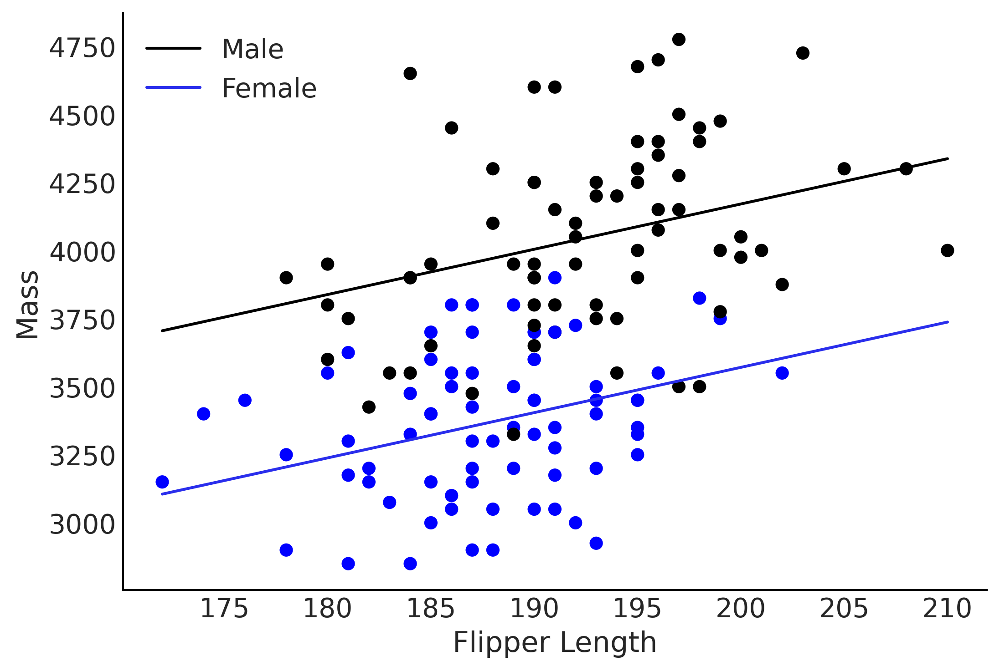

Code 3: Linear Models and Probabilistic Programming Languages#
This is a reference notebook for the book Bayesian Modeling and Computation in Python
The textbook is not needed to use or run this code, though the context and explanation is missing from this notebook.
If you’d like a copy it’s available from the CRC Press or from Amazon. ``
import pymc3 as pm
import matplotlib.pyplot as plt
import arviz as az
import pandas as pd
from scipy import special, stats
import numpy as np
import tensorflow as tf
import tensorflow_probability as tfp
import theano
import datetime
print(f"Last Run {datetime.datetime.now()}")
WARNING (theano.tensor.blas): Using NumPy C-API based implementation for BLAS functions.
Last Run 2022-09-11 01:51:41.285153
az.style.use("arviz-grayscale")
plt.rcParams['figure.dpi'] = 300
def plot_label_resizer(axes, fontsize=14):
"""Resizes the axes labels of plots"""
for ax in axes.ravel():
for item in ([ax.title, ax.xaxis.label, ax.yaxis.label] +
ax.get_xticklabels() + ax.get_yticklabels()):
item.set_fontsize(fontsize)
return
Comparing Two (or More) Groups#
Code 3.1#
penguins = pd.read_csv("../data/penguins.csv")
# Subset to the columns needed
missing_data = penguins.isnull()[
["bill_length_mm", "flipper_length_mm", "sex", "body_mass_g"]
].any(axis=1)
# Drop rows with any missing data
penguins = penguins.loc[~missing_data]
penguins.head()
| species | island | bill_length_mm | bill_depth_mm | flipper_length_mm | body_mass_g | sex | year | |
|---|---|---|---|---|---|---|---|---|
| 0 | Adelie | Torgersen | 39.1 | 18.7 | 181.0 | 3750.0 | male | 2007 |
| 1 | Adelie | Torgersen | 39.5 | 17.4 | 186.0 | 3800.0 | female | 2007 |
| 2 | Adelie | Torgersen | 40.3 | 18.0 | 195.0 | 3250.0 | female | 2007 |
| 4 | Adelie | Torgersen | 36.7 | 19.3 | 193.0 | 3450.0 | female | 2007 |
| 5 | Adelie | Torgersen | 39.3 | 20.6 | 190.0 | 3650.0 | male | 2007 |
penguins.shape
(333, 8)
Table 3.1 and Code 3.2#
summary_stats = (penguins.loc[:, ["species", "body_mass_g"]]
.groupby("species")
.agg(["mean", "std", "count"]))
summary_stats
| body_mass_g | |||
|---|---|---|---|
| mean | std | count | |
| species | |||
| Adelie | 3706.164384 | 458.620135 | 146 |
| Chinstrap | 3733.088235 | 384.335081 | 68 |
| Gentoo | 5092.436975 | 501.476154 | 119 |
Code 3.3#
adelie_mask = (penguins["species"] == "Adelie")
adelie_mass_obs = penguins.loc[adelie_mask, "body_mass_g"].values
with pm.Model() as model_adelie_penguin_mass:
σ = pm.HalfStudentT("σ", 100, 2000)
μ = pm.Normal("μ", 4000, 3000)
mass = pm.Normal("mass", mu=μ, sigma=σ, observed=adelie_mass_obs)
prior = pm.sample_prior_predictive(samples=5000)
trace = pm.sample(chains=4)
inf_data_adelie_penguin_mass = az.from_pymc3(prior=prior, trace=trace)
/tmp/ipykernel_3270/1462887898.py:10: FutureWarning: In v4.0, pm.sample will return an `arviz.InferenceData` object instead of a `MultiTrace` by default. You can pass return_inferencedata=True or return_inferencedata=False to be safe and silence this warning.
trace = pm.sample(chains=4)
Auto-assigning NUTS sampler...
INFO:pymc3:Auto-assigning NUTS sampler...
Initializing NUTS using jitter+adapt_diag...
INFO:pymc3:Initializing NUTS using jitter+adapt_diag...
Multiprocess sampling (4 chains in 4 jobs)
INFO:pymc3:Multiprocess sampling (4 chains in 4 jobs)
NUTS: [μ, σ]
INFO:pymc3:NUTS: [μ, σ]
100.00% [8000/8000 00:00<00:00 Sampling 4 chains, 0 divergences]
Sampling 4 chains for 1_000 tune and 1_000 draw iterations (4_000 + 4_000 draws total) took 1 seconds.
INFO:pymc3:Sampling 4 chains for 1_000 tune and 1_000 draw iterations (4_000 + 4_000 draws total) took 1 seconds.
Figure 3.1#
axes = az.plot_posterior(inf_data_adelie_penguin_mass.prior, var_names=["σ", "μ"], textsize=20)
# plt.savefig("img/SingleSpecies_Prior_Predictive.png")
plt.savefig("img/chp03/single_species_prior_predictive.png")
Figure 3.2#
axes = az.plot_trace(inf_data_adelie_penguin_mass, divergences="bottom", kind="rank_bars")
plot_label_resizer(axes, fontsize=16)
# plt.savefig("img/SingleSpecies_KDE_RankPlot.png")
plt.savefig("img/chp03/single_species_KDE_rankplot.png")
Table 3.2#
az.summary(inf_data_adelie_penguin_mass)
| mean | sd | hdi_3% | hdi_97% | mcse_mean | mcse_sd | ess_bulk | ess_tail | r_hat | |
|---|---|---|---|---|---|---|---|---|---|
| μ | 3705.962 | 38.083 | 3637.049 | 3777.458 | 0.680 | 0.481 | 3141.0 | 2587.0 | 1.01 |
| σ | 462.383 | 27.484 | 412.244 | 514.464 | 0.459 | 0.326 | 3601.0 | 2815.0 | 1.00 |
print(az.summary(inf_data_adelie_penguin_mass).round(1).to_latex())
\begin{tabular}{lrrrrrrrrr}
\toprule
{} & mean & sd & hdi\_3\% & hdi\_97\% & mcse\_mean & mcse\_sd & ess\_bulk & ess\_tail & r\_hat \\
\midrule
μ & 3706.0 & 38.1 & 3637.0 & 3777.5 & 0.7 & 0.5 & 3141.0 & 2587.0 & 1.0 \\
σ & 462.4 & 27.5 & 412.2 & 514.5 & 0.5 & 0.3 & 3601.0 & 2815.0 & 1.0 \\
\bottomrule
\end{tabular}
Figure 3.3#
axes = az.plot_posterior(inf_data_adelie_penguin_mass, hdi_prob=.94, textsize=26);
# Copied from code output 3.2
axes[0].axvline(3706, linestyle="--")
axes[1].axvline(459, linestyle="--")
plt.savefig("img/SingleSpecies_Mass_PosteriorPlot.png")
plt.savefig("img/chp03/single_species_mass_posteriorplot.png")
Figure 3.4#
# pd.categorical makes it easy to index species below
all_species = pd.Categorical(penguins["species"])
with pm.Model() as model_penguin_mass_all_species:
# Note the addition of the shape parameter
σ = pm.HalfStudentT("σ", 100, 2000, shape=3)
μ = pm.Normal("μ", 4000, 3000, shape=3)
mass = pm.Normal("mass",
mu=μ[all_species.codes],
sigma=σ[all_species.codes],
observed=penguins["body_mass_g"])
trace = pm.sample()
inf_data_model_penguin_mass_all_species = az.from_pymc3(
trace=trace,
coords={"μ_dim_0": all_species.categories,
"σ_dim_0": all_species.categories})
/tmp/ipykernel_3270/1396566618.py:13: FutureWarning: In v4.0, pm.sample will return an `arviz.InferenceData` object instead of a `MultiTrace` by default. You can pass return_inferencedata=True or return_inferencedata=False to be safe and silence this warning.
trace = pm.sample()
Auto-assigning NUTS sampler...
INFO:pymc3:Auto-assigning NUTS sampler...
Initializing NUTS using jitter+adapt_diag...
INFO:pymc3:Initializing NUTS using jitter+adapt_diag...
Multiprocess sampling (4 chains in 4 jobs)
INFO:pymc3:Multiprocess sampling (4 chains in 4 jobs)
NUTS: [μ, σ]
INFO:pymc3:NUTS: [μ, σ]
100.00% [8000/8000 00:01<00:00 Sampling 4 chains, 0 divergences]
Sampling 4 chains for 1_000 tune and 1_000 draw iterations (4_000 + 4_000 draws total) took 2 seconds.
INFO:pymc3:Sampling 4 chains for 1_000 tune and 1_000 draw iterations (4_000 + 4_000 draws total) took 2 seconds.
Figure 3.4#
axes = az.plot_trace(inf_data_model_penguin_mass_all_species, compact=False, divergences="bottom", kind="rank_bars");
plot_label_resizer(axes, fontsize=16)
plt.savefig("img/chp03/all_species_KDE_rankplot.png")
Code 3.5 and Figure 3.5#
axes = az.plot_forest(inf_data_model_penguin_mass_all_species, var_names=["μ"], figsize=(8, 2.5))
axes[0].set_title("μ Mass Estimate: 94.0% HDI")
plt.savefig("img/chp03/independent_model_forestplotmeans.png")
Code 3.6 and Figure 3.6#
axes = az.plot_forest(inf_data_model_penguin_mass_all_species, var_names=["σ"], figsize=(8, 3));
axes[0].set_title("σ Mass Estimate: 94.0% HDI")
plt.savefig("img/chp03/independent_model_forestplotsigma.png")

Code 3.7#
tfd = tfp.distributions
root = tfd.JointDistributionCoroutine.Root
species_idx = tf.constant(all_species.codes, tf.int32)
body_mass_g = tf.constant(penguins["body_mass_g"], tf.float32)
@tfd.JointDistributionCoroutine
def jd_penguin_mass_all_species():
σ = yield root(tfd.Sample(
tfd.HalfStudentT(df=100, loc=0, scale=2000),
sample_shape=3,
name="sigma"))
μ = yield root(tfd.Sample(
tfd.Normal(loc=4000, scale=3000),
sample_shape=3,
name="mu"))
mass = yield tfd.Independent(
tfd.Normal(loc=tf.gather(μ, species_idx, axis=-1),
scale=tf.gather(σ, species_idx, axis=-1)),
reinterpreted_batch_ndims=1,
name="mass")
Code 3.8#
prior_predictive_samples = jd_penguin_mass_all_species.sample(1000)
WARNING:tensorflow:@custom_gradient grad_fn has 'variables' in signature, but no ResourceVariables were used on the forward pass.
WARNING:tensorflow:@custom_gradient grad_fn has 'variables' in signature, but no ResourceVariables were used on the forward pass.
Code 3.9#
jd_penguin_mass_all_species.sample(sigma=tf.constant([.1, .2, .3]))
jd_penguin_mass_all_species.sample(mu=tf.constant([.1, .2, .3]))
StructTuple(
sigma=<tf.Tensor: shape=(3,), dtype=float32, numpy=array([ 552.0892 , 1434.1299 , 625.13544], dtype=float32)>,
mu=<tf.Tensor: shape=(3,), dtype=float32, numpy=array([0.1, 0.2, 0.3], dtype=float32)>,
mass=<tf.Tensor: shape=(333,), dtype=float32, numpy=
array([-5.93922058e+02, -2.37948959e+02, 8.38233948e+01, 1.85539749e+02,
1.65660742e+03, 3.56029785e+02, -5.23416321e+02, 1.06729443e+03,
-1.09924576e+02, 3.97679016e+02, -1.40093216e+02, 1.01578876e+03,
-3.79585724e+01, 9.20992554e+02, 5.56703491e+02, 8.16790695e+01,
3.25581116e+02, 4.45276001e+02, -8.55970764e+02, 6.72078430e+02,
-1.08937329e+03, -4.04268555e+02, -4.57502480e+01, -2.20091141e+02,
5.24903076e+02, -4.17914215e+02, 1.31905579e+02, 7.98313110e+02,
-3.10064941e+02, 1.67310135e+02, 6.90617371e+02, 3.79906677e+02,
4.88379608e+02, 1.29179855e+02, 5.99103821e+02, 2.40964928e+01,
3.04810852e+02, -1.46305554e+03, 4.61828156e+02, -3.34749542e+02,
6.28848206e+02, -4.51004181e+01, -3.87800690e+02, 6.57469177e+02,
7.35922485e+02, -6.42532776e+02, -3.39309753e+02, -2.89014648e+02,
5.93632141e+02, 1.21664844e+03, -9.05946533e+02, 6.24990784e+02,
1.88474960e+02, 4.39227570e+02, 6.73463287e+01, 5.77339783e+02,
-8.83584045e+02, -1.08447029e+02, -1.13443616e+03, 1.48543579e+02,
8.40977783e+01, -6.96143860e+02, 1.14641922e+02, 5.51037842e+02,
-1.12256508e+02, -2.59314819e+02, 1.08554614e+03, 2.96111542e+02,
-2.54339478e+02, 6.14382874e+02, 6.14448669e+02, -7.56640686e+02,
-1.50460254e+03, -6.60188599e+02, -1.29633530e+02, -5.56256348e+02,
-2.05140427e+02, -2.36172348e+02, -7.18445358e+01, 7.20366211e+02,
-3.19744812e+02, -1.35501251e+02, -8.70744385e+02, 1.19343030e+03,
-1.89815765e+02, -4.24798950e+02, -3.39165283e+02, -4.01121155e+02,
-2.59738495e+02, -8.77398777e+00, -1.51342300e+02, -2.98635590e+02,
5.20723999e+02, -2.55068573e+02, 1.70830231e+02, -9.22063965e+02,
-3.19998913e+01, 3.68183022e+01, 4.31093323e+02, -3.15261475e+02,
1.23628032e+00, -4.56681915e+02, -8.68590164e+01, -4.43849068e+01,
5.87831421e+02, 2.61594757e+02, 6.99650421e+01, -6.15088989e+02,
-2.91627350e+01, 1.32510925e+02, -9.04729126e+02, 6.62342163e+02,
-1.10666968e+03, -4.29793854e+02, -8.81342850e+01, 6.95011597e+01,
-1.17511719e+02, -1.78584045e+02, -3.98100616e+02, -3.78652191e+01,
-4.66283539e+02, 4.56223511e+02, 1.26794380e+02, 1.67909778e+03,
3.99530258e+01, 6.98896240e+02, -3.98198334e+02, -7.41191406e+02,
4.32225525e+02, 1.68228302e+02, 2.48111877e+02, -3.46871338e+02,
-1.58888992e+02, -4.25928558e+02, 7.91068192e+01, 1.22667224e+03,
3.98328491e+02, 2.79900665e+02, 4.89215851e+02, -1.62162888e+02,
-1.88004868e+02, 7.64645996e+02, 4.78670746e+02, 1.87459961e+02,
6.28818848e+02, 4.17097412e+02, -3.19796967e+02, 3.42891327e+02,
-2.39653568e+01, 9.24775162e+01, -3.73617210e+01, -4.54074280e+02,
3.97200584e+01, 2.70036621e+02, -1.25002205e+02, -8.00478821e+02,
1.62033130e+03, -2.90705841e+02, 2.08233429e+02, -4.50529205e+02,
-2.68905273e+02, 1.92412643e+02, 1.10681616e+03, -9.58417419e+02,
3.21805786e+02, 5.16036682e+01, 6.14288635e+02, 1.10270898e+03,
1.03965050e+02, 1.22385193e+02, 4.58454895e+02, -3.57721649e+02,
3.03187195e+02, -1.20032104e+03, -1.92999634e+03, 8.54108658e+01,
-1.81622421e+02, -7.49972458e+01, 3.20169678e+02, -7.02201294e+02,
-2.23476837e+02, 1.24182507e+03, 1.40651062e+03, -3.86318939e+02,
2.36866745e+02, 3.13355835e+02, -4.07654144e+02, 1.57744214e+03,
2.39936554e+02, 2.75500458e+02, -5.16106262e+02, 2.90819187e+01,
2.55652603e+02, 1.91919098e+02, -1.86068939e+02, -1.32122879e+02,
-2.27926300e+02, -1.07888928e+03, 4.48207214e+02, -4.27989594e+02,
-1.90340366e+01, 2.75113892e+02, 1.29037976e+03, -1.49717331e+02,
-1.67228101e+03, 2.39397491e+02, -1.99263763e+02, -3.04636078e+02,
-5.53926575e+02, -4.34877136e+02, 1.21472656e+03, -8.76648987e+02,
-1.01057239e+03, -5.76911560e+02, -4.71061676e+02, 1.26316077e+03,
-1.09995459e+03, 6.43508728e+02, 2.84528137e+02, 1.18680435e+02,
1.68555008e+02, 2.80787750e+02, -9.30875183e+02, -2.88004333e+02,
7.07265381e+02, 5.01361450e+02, -1.20542285e+03, 3.50079803e+01,
-1.25299889e+02, -2.45561630e+02, 2.60151062e+02, 3.40691376e+02,
3.82616791e+02, -1.86522659e+02, -6.11100403e+02, -1.36144482e+03,
-1.79425842e+02, -2.72390503e+02, 4.70271339e+01, 3.88210030e+01,
5.20308411e+02, -2.19378189e+02, -5.14443994e-01, -3.50335541e+02,
-9.60320618e+02, -5.22910278e+02, 6.64908142e+02, 9.93834305e+01,
-3.04023285e+02, 7.28380066e+02, 5.63217285e+02, 6.89995422e+02,
8.43656799e+02, 7.11227600e+02, 6.31382080e+02, 5.50244324e+02,
4.16526794e+02, -4.83529694e+02, -7.31984131e+02, 7.26320618e+02,
1.47985825e+02, 3.67605286e+02, -2.37831974e+01, 4.40556122e+02,
2.56700726e+01, -2.15830231e+01, -3.27347827e+03, 1.00904999e+03,
-2.29312646e+03, -5.08646606e+02, -1.49832983e+03, -1.94964893e+03,
-1.54101367e+03, -1.08660303e+03, 6.93715454e+02, 5.65755859e+02,
-9.15261597e+02, 1.44233508e+03, -1.66933740e+03, -2.98369629e+03,
-1.81837390e+03, -1.79714539e+03, 5.92228821e+02, -5.27441223e+02,
1.87023596e+03, -8.18577698e+02, -3.15794482e+03, 1.41181628e+03,
-8.37230713e+02, -7.23128174e+02, 3.95551544e+02, 1.94891602e+03,
-5.03683716e+02, 8.48680481e+02, -1.51733435e+03, -9.81176025e+02,
2.57200043e+02, 1.96675903e+03, -3.89895134e+01, 6.53164917e+02,
-5.91489136e+02, 4.83635162e+02, -1.35787415e+03, 9.19974976e+02,
1.58941614e+03, 5.40443481e+02, -5.96330383e+02, 7.18520813e+02,
-2.08548950e+03, 1.64557422e+03, 1.50117798e+02, 7.39220947e+02,
2.04531702e+03, -1.88741052e+03, -1.36326758e+03, -1.71920483e+03,
-1.19545178e+03, -2.09876587e+03, -1.06984399e+03, -8.77017639e+02,
6.22129555e+01, -1.27431567e+03, 1.69150671e+03, -1.49625928e+03,
4.14052795e+02, 6.42308777e+02, 1.89394861e+03, 2.24904321e+03,
-2.66846973e+03, 3.55730615e+03, 1.10520093e+03, 1.18605969e+03,
1.00390234e+03], dtype=float32)>
)
Code 3.10#
target_density_function = lambda *x: jd_penguin_mass_all_species.log_prob(
*x, mass=body_mass_g)
jd_penguin_mass_observed = jd_penguin_mass_all_species.experimental_pin(
mass=body_mass_g)
target_density_function = jd_penguin_mass_observed.unnormalized_log_prob
# init_state = jd_penguin_mass_observed.sample_unpinned(10)
# target_density_function1(*init_state), target_density_function2(*init_state)
Code 3.11#
run_mcmc = tf.function(
tfp.experimental.mcmc.windowed_adaptive_nuts,
autograph=False, jit_compile=True)
mcmc_samples, sampler_stats = run_mcmc(
1000, jd_penguin_mass_all_species, n_chains=4, num_adaptation_steps=1000,
mass=body_mass_g)
inf_data_model_penguin_mass_all_species2 = az.from_dict(
posterior={
# TFP mcmc returns (num_samples, num_chains, ...), we swap
# the first and second axis below for each RV so the shape
# is what ArviZ expected.
k:np.swapaxes(v, 1, 0)
for k, v in mcmc_samples._asdict().items()},
sample_stats={
k:np.swapaxes(sampler_stats[k], 1, 0)
for k in ["target_log_prob", "diverging", "accept_ratio", "n_steps"]}
)
WARNING:tensorflow:@custom_gradient grad_fn has 'variables' in signature, but no ResourceVariables were used on the forward pass.
WARNING:tensorflow:@custom_gradient grad_fn has 'variables' in signature, but no ResourceVariables were used on the forward pass.
WARNING:tensorflow:@custom_gradient grad_fn has 'variables' in signature, but no ResourceVariables were used on the forward pass.
WARNING:tensorflow:@custom_gradient grad_fn has 'variables' in signature, but no ResourceVariables were used on the forward pass.
WARNING:tensorflow:@custom_gradient grad_fn has 'variables' in signature, but no ResourceVariables were used on the forward pass.
WARNING:tensorflow:@custom_gradient grad_fn has 'variables' in signature, but no ResourceVariables were used on the forward pass.
WARNING:tensorflow:From /usr/local/lib/python3.8/dist-packages/tensorflow_probability/python/distributions/distribution.py:342: calling MultivariateNormalDiag.__init__ (from tensorflow_probability.python.distributions.mvn_diag) with scale_identity_multiplier is deprecated and will be removed after 2020-01-01.
Instructions for updating:
`scale_identity_multiplier` is deprecated; please combine it into `scale_diag` directly instead.
WARNING:tensorflow:From /usr/local/lib/python3.8/dist-packages/tensorflow_probability/python/distributions/distribution.py:342: calling MultivariateNormalDiag.__init__ (from tensorflow_probability.python.distributions.mvn_diag) with scale_identity_multiplier is deprecated and will be removed after 2020-01-01.
Instructions for updating:
`scale_identity_multiplier` is deprecated; please combine it into `scale_diag` directly instead.
2022-09-11 01:52:05.229558: W tensorflow/compiler/tf2xla/kernels/random_ops.cc:102] Warning: Using tf.random.uniform with XLA compilation will ignore seeds; consider using tf.random.stateless_uniform instead if reproducible behavior is desired. sanitize_seed/seed
2022-09-11 01:52:05.296947: W tensorflow/compiler/tf2xla/kernels/assert_op.cc:38] Ignoring Assert operator mcmc_retry_init/assert_equal_1/Assert/AssertGuard/Assert
az.plot_trace(inf_data_model_penguin_mass_all_species2, divergences="bottom", kind="rank_bars", figsize=(6,4));
Code 3.12#
prior_predictive_samples = jd_penguin_mass_all_species.sample([1, 1000])
dist, samples = jd_penguin_mass_all_species.sample_distributions(
value=mcmc_samples)
ppc_samples = samples[-1]
ppc_distribution = dist[-1].distribution
data_log_likelihood = ppc_distribution.log_prob(body_mass_g)
# Be careful not to run this code twice during REPL workflow.
inf_data_model_penguin_mass_all_species2.add_groups(
prior=prior_predictive_samples[:-1]._asdict(),
prior_predictive={"mass": prior_predictive_samples[-1]},
posterior_predictive={"mass": np.swapaxes(ppc_samples, 1, 0)},
log_likelihood={"mass": np.swapaxes(data_log_likelihood, 1, 0)},
observed_data={"mass": body_mass_g}
)
/usr/local/lib/python3.8/dist-packages/arviz/data/inference_data.py:1328: UserWarning: the default dims 'chain' and 'draw' will be added automatically
warnings.warn(
az.plot_ppc(inf_data_model_penguin_mass_all_species2)
<AxesSubplot:xlabel='mass'>
az.loo(inf_data_model_penguin_mass_all_species2)
Computed from 4000 by 333 log-likelihood matrix
Estimate SE
elpd_loo -2516.24 11.60
p_loo 5.51 -
Linear Regression#
Figure 3.7#
fig = plt.figure(figsize=(10, 8))
ax = fig.gca(projection="3d")
x = np.linspace(-16, 12, 500)
z = np.array([0, 4, 8])
for i, zi in enumerate(z):
dens = stats.norm(-zi, 3).pdf(x)
ax.plot(x, dens, zs=zi + 1, zdir="y", c="k")
ax.plot([-zi, -zi], [0, max(dens)], zs=zi + 1, c="k", ls=":", zdir="y")
ax.text(
-zi,
zi - 1,
max(dens) * 1.03 + i / 100,
f"$\\mathcal{{N}}(\\beta_0 + \\beta_1 x_{i}, \\sigma)$",
zdir="y",
fontsize=18,
)
ax.plot(-z, z + 1, "C4-", lw=3)
ax.set_xlabel("y", fontsize=20)
ax.set_ylabel("x", fontsize=24, labelpad=20)
ax.set_yticks([zi + 1 for zi in z])
ax.set_yticklabels([f"$x_{i}$" for i in range(len(z))], fontsize=22)
ax.grid(False)
ax.set_xticks([])
ax.set_zticks([])
ax.yaxis.pane.fill = False
ax.xaxis.pane.fill = False
ax.xaxis.pane.set_edgecolor("None")
ax.yaxis.pane.set_edgecolor("None")
ax.zaxis.pane.set_facecolor("C3")
ax.w_zaxis.line.set_linewidth(0)
ax.view_init(elev=10, azim=-25)
# plt.savefig("img/3d_linear_regression.png", bbox_inches="tight", dpi=300)
plt.savefig("img/chp03/3d_linear_regression.png", bbox_inches="tight", dpi=300)
/tmp/ipykernel_3270/2974397516.py:2: MatplotlibDeprecationWarning: Calling gca() with keyword arguments was deprecated in Matplotlib 3.4. Starting two minor releases later, gca() will take no keyword arguments. The gca() function should only be used to get the current axes, or if no axes exist, create new axes with default keyword arguments. To create a new axes with non-default arguments, use plt.axes() or plt.subplot().
ax = fig.gca(projection="3d")
/tmp/ipykernel_3270/2974397516.py:39: UserWarning: constrained_layout not applied because axes sizes collapsed to zero. Try making figure larger or axes decorations smaller.
plt.savefig("img/chp03/3d_linear_regression.png", bbox_inches="tight", dpi=300)
/usr/local/lib/python3.8/dist-packages/IPython/core/pylabtools.py:134: UserWarning: constrained_layout not applied because axes sizes collapsed to zero. Try making figure larger or axes decorations smaller.
fig.canvas.print_figure(bytes_io, **kw)

Code 3.13#
adelie_flipper_length_obs = penguins.loc[adelie_mask, "flipper_length_mm"]
with pm.Model() as model_adelie_flipper_regression:
# pm.Data allows us to change the underlying value in a later code block
adelie_flipper_length = pm.Data("adelie_flipper_length", adelie_flipper_length_obs)
σ = pm.HalfStudentT("σ", 100, 2000)
β_0 = pm.Normal("β_0", 0, 4000)
β_1 = pm.Normal("β_1", 0, 4000)
μ = pm.Deterministic("μ", β_0 + β_1 * adelie_flipper_length)
mass = pm.Normal("mass", mu=μ, sigma=σ, observed=adelie_mass_obs)
inf_data_adelie_flipper_regression = pm.sample(return_inferencedata=True)
Auto-assigning NUTS sampler...
INFO:pymc3:Auto-assigning NUTS sampler...
Initializing NUTS using jitter+adapt_diag...
INFO:pymc3:Initializing NUTS using jitter+adapt_diag...
Multiprocess sampling (4 chains in 4 jobs)
INFO:pymc3:Multiprocess sampling (4 chains in 4 jobs)
NUTS: [β_1, β_0, σ]
INFO:pymc3:NUTS: [β_1, β_0, σ]
100.00% [8000/8000 00:10<00:00 Sampling 4 chains, 41 divergences]
Sampling 4 chains for 1_000 tune and 1_000 draw iterations (4_000 + 4_000 draws total) took 11 seconds.
INFO:pymc3:Sampling 4 chains for 1_000 tune and 1_000 draw iterations (4_000 + 4_000 draws total) took 11 seconds.
There were 2 divergences after tuning. Increase `target_accept` or reparameterize.
ERROR:pymc3:There were 2 divergences after tuning. Increase `target_accept` or reparameterize.
There were 39 divergences after tuning. Increase `target_accept` or reparameterize.
ERROR:pymc3:There were 39 divergences after tuning. Increase `target_accept` or reparameterize.
The acceptance probability does not match the target. It is 0.7141061105245885, but should be close to 0.8. Try to increase the number of tuning steps.
WARNING:pymc3:The acceptance probability does not match the target. It is 0.7141061105245885, but should be close to 0.8. Try to increase the number of tuning steps.
The number of effective samples is smaller than 10% for some parameters.
WARNING:pymc3:The number of effective samples is smaller than 10% for some parameters.
Figure 3.8#
axes = az.plot_posterior(inf_data_adelie_flipper_regression, var_names = ["β_0", "β_1"], textsize=20);
#plot_label_resizer(axes, fontsize)
plt.savefig("img/chp03/adelie_coefficient_posterior_plots")
Figure 3.9#
axes = az.plot_forest(
[inf_data_adelie_penguin_mass, inf_data_adelie_flipper_regression],
model_names=["mass_only", "flipper_regression"],
var_names=["σ"], combined=True, figsize=(10,2))
axes[0].set_title("σ Comparison 94.0 HDI")
plt.savefig("img/chp03/SingleSpecies_SingleRegression_Forest_Sigma_Comparison.png")
Figure 3.10#
fig, ax = plt.subplots()
alpha_m = inf_data_adelie_flipper_regression.posterior.mean().to_dict()["data_vars"]["β_0"]["data"]
beta_m = inf_data_adelie_flipper_regression.posterior.mean().to_dict()["data_vars"]["β_1"]["data"]
flipper_length = np.linspace(adelie_flipper_length_obs.min(), adelie_flipper_length_obs.max(), 100)
flipper_length_mean = alpha_m + beta_m * flipper_length
ax.plot(flipper_length, flipper_length_mean, c='C4',
label=f'y = {alpha_m:.2f} + {beta_m:.2f} * x')
ax.scatter(adelie_flipper_length_obs, adelie_mass_obs)
# Figure out how to do this from inference data
az.plot_hdi(adelie_flipper_length_obs, inf_data_adelie_flipper_regression.posterior['μ'], hdi_prob=0.94, color='k', ax=ax)
ax.set_xlabel('Flipper Length')
ax.set_ylabel('Mass');
plt.savefig('img/chp03/flipper_length_mass_regression.png', dpi=300)
Code 3.14#
with model_adelie_flipper_regression:
# Change the underlying value to the mean observed flipper length
# for our posterior predictive samples
pm.set_data({"adelie_flipper_length": [adelie_flipper_length_obs.mean()]})
posterior_predictions = pm.sample_posterior_predictive(
inf_data_adelie_flipper_regression.posterior, var_names=["mass", "μ"])
100.00% [4000/4000 00:03<00:00]
Figure 3.11#
fig, ax = plt.subplots()
az.plot_dist(posterior_predictions["mass"], label="Posterior Predictive of \nIndividual Penguin Mass", ax=ax)
az.plot_dist(posterior_predictions["μ"],label="Posterior Predictive of μ", color="C4", ax=ax)
ax.set_xlim(2900, 4500);
ax.legend(loc=2)
ax.set_xlabel("Mass (grams)")
ax.set_yticks([])
plt.savefig('img/chp03/flipper_length_mass_posterior_predictive.png', dpi=300)
Code 3.15#
adelie_flipper_length_obs = penguins.loc[adelie_mask, "flipper_length_mm"].values
adelie_flipper_length_c = adelie_flipper_length_obs - adelie_flipper_length_obs.mean()
PyMC Centered Model#
with pm.Model() as model_adelie_flipper_regression:
σ = pm.HalfStudentT("σ", 100, 2000)
β_1 = pm.Normal("β_1", 0, 4000)
β_0 = pm.Normal("β_0", 0, 4000)
μ = pm.Deterministic("μ", β_0 + β_1*adelie_flipper_length_c)
mass = pm.Normal("mass", mu=μ, sigma=σ, observed = adelie_mass_obs)
# Need to remove this one I find bug
inf_data_adelie_flipper_length_c = pm.sample(return_inferencedata=True, random_seed=0)
Auto-assigning NUTS sampler...
INFO:pymc3:Auto-assigning NUTS sampler...
Initializing NUTS using jitter+adapt_diag...
INFO:pymc3:Initializing NUTS using jitter+adapt_diag...
Multiprocess sampling (4 chains in 4 jobs)
INFO:pymc3:Multiprocess sampling (4 chains in 4 jobs)
NUTS: [β_0, β_1, σ]
INFO:pymc3:NUTS: [β_0, β_1, σ]
100.00% [8000/8000 00:01<00:00 Sampling 4 chains, 0 divergences]
Sampling 4 chains for 1_000 tune and 1_000 draw iterations (4_000 + 4_000 draws total) took 2 seconds.
INFO:pymc3:Sampling 4 chains for 1_000 tune and 1_000 draw iterations (4_000 + 4_000 draws total) took 2 seconds.
az.plot_posterior(inf_data_adelie_flipper_length_c, var_names = ["β_0", "β_1"], textsize=24);
plt.savefig("img/chp03/singlespecies_multipleregression_centered.png")
Code 3.16#
adelie_flipper_length_c = adelie_flipper_length_obs - adelie_flipper_length_obs.mean()
def gen_adelie_flipper_model(adelie_flipper_length):
adelie_flipper_length = tf.constant(adelie_flipper_length, tf.float32)
@tfd.JointDistributionCoroutine
def jd_adelie_flipper_regression():
σ = yield root(tfd.HalfStudentT(df=100, loc=0, scale=2000, name='sigma'))
β_1 = yield root(tfd.Normal(loc=0, scale=4000, name='beta_1'))
β_0 = yield root(tfd.Normal(loc=0, scale=4000, name='beta_0'))
μ = β_0[..., None] + β_1[..., None] * adelie_flipper_length
mass = yield tfd.Independent(
tfd.Normal(loc=μ, scale=σ[..., None]),
reinterpreted_batch_ndims=1,
name='mass')
return jd_adelie_flipper_regression
# Use non-centered predictor, this gives the same model as
# model_adelie_flipper_regression
jd_adelie_flipper_regression = gen_adelie_flipper_model(
adelie_flipper_length_obs)
# Use centered predictor
jd_adelie_flipper_regression = gen_adelie_flipper_model(
adelie_flipper_length_c)
mcmc_samples, sampler_stats = run_mcmc(
1000, jd_adelie_flipper_regression, n_chains=4, num_adaptation_steps=1000,
mass=tf.constant(adelie_mass_obs, tf.float32))
inf_data_adelie_flipper_length_c = az.from_dict(
posterior={
k:np.swapaxes(v, 1, 0)
for k, v in mcmc_samples._asdict().items()},
sample_stats={
k:np.swapaxes(sampler_stats[k], 1, 0)
for k in ["target_log_prob", "diverging", "accept_ratio", "n_steps"]
}
)
WARNING:tensorflow:@custom_gradient grad_fn has 'variables' in signature, but no ResourceVariables were used on the forward pass.
WARNING:tensorflow:@custom_gradient grad_fn has 'variables' in signature, but no ResourceVariables were used on the forward pass.
WARNING:tensorflow:@custom_gradient grad_fn has 'variables' in signature, but no ResourceVariables were used on the forward pass.
WARNING:tensorflow:@custom_gradient grad_fn has 'variables' in signature, but no ResourceVariables were used on the forward pass.
WARNING:tensorflow:@custom_gradient grad_fn has 'variables' in signature, but no ResourceVariables were used on the forward pass.
WARNING:tensorflow:@custom_gradient grad_fn has 'variables' in signature, but no ResourceVariables were used on the forward pass.
WARNING:tensorflow:@custom_gradient grad_fn has 'variables' in signature, but no ResourceVariables were used on the forward pass.
WARNING:tensorflow:@custom_gradient grad_fn has 'variables' in signature, but no ResourceVariables were used on the forward pass.
WARNING:tensorflow:@custom_gradient grad_fn has 'variables' in signature, but no ResourceVariables were used on the forward pass.
WARNING:tensorflow:@custom_gradient grad_fn has 'variables' in signature, but no ResourceVariables were used on the forward pass.
WARNING:tensorflow:@custom_gradient grad_fn has 'variables' in signature, but no ResourceVariables were used on the forward pass.
WARNING:tensorflow:@custom_gradient grad_fn has 'variables' in signature, but no ResourceVariables were used on the forward pass.
WARNING:tensorflow:@custom_gradient grad_fn has 'variables' in signature, but no ResourceVariables were used on the forward pass.
WARNING:tensorflow:@custom_gradient grad_fn has 'variables' in signature, but no ResourceVariables were used on the forward pass.
2022-09-11 01:53:34.628199: W tensorflow/core/framework/op_kernel.cc:1745] OP_REQUIRES failed at functional_ops.cc:373 : INTERNAL: No function library
2022-09-11 01:53:34.643893: W tensorflow/core/framework/op_kernel.cc:1745] OP_REQUIRES failed at functional_ops.cc:373 : INTERNAL: No function library
2022-09-11 01:53:34.653462: W tensorflow/core/framework/op_kernel.cc:1745] OP_REQUIRES failed at functional_ops.cc:373 : INTERNAL: No function library
2022-09-11 01:53:34.674251: W tensorflow/core/framework/op_kernel.cc:1745] OP_REQUIRES failed at functional_ops.cc:373 : INTERNAL: No function library
2022-09-11 01:53:34.948912: W tensorflow/core/framework/op_kernel.cc:1745] OP_REQUIRES failed at functional_ops.cc:373 : INTERNAL: No function library
2022-09-11 01:53:34.954643: W tensorflow/core/framework/op_kernel.cc:1745] OP_REQUIRES failed at functional_ops.cc:373 : INTERNAL: No function library
2022-09-11 01:53:34.959949: W tensorflow/core/framework/op_kernel.cc:1745] OP_REQUIRES failed at functional_ops.cc:373 : INTERNAL: No function library
2022-09-11 01:53:34.966441: W tensorflow/core/framework/op_kernel.cc:1745] OP_REQUIRES failed at functional_ops.cc:373 : INTERNAL: No function library
2022-09-11 01:53:35.088666: W tensorflow/compiler/tf2xla/kernels/assert_op.cc:38] Ignoring Assert operator mcmc_retry_init/assert_equal_1/Assert/AssertGuard/Assert
Figure 3.12#
az.plot_posterior(inf_data_adelie_flipper_length_c, var_names = ["beta_0", "beta_1"]);
Multiple Linear Regression#
Code 3.17#
# Binary encoding of the categorical predictor
sex_obs = penguins.loc[adelie_mask ,"sex"].replace({"male":0, "female":1})
with pm.Model() as model_penguin_mass_categorical:
σ = pm.HalfStudentT("σ", 100, 2000)
β_0 = pm.Normal("β_0", 0, 3000)
β_1 = pm.Normal("β_1", 0, 3000)
β_2 = pm.Normal("β_2", 0, 3000)
μ = pm.Deterministic(
"μ", β_0 + β_1 * adelie_flipper_length_obs + β_2 * sex_obs)
mass = pm.Normal("mass", mu=μ, sigma=σ, observed=adelie_mass_obs)
inf_data_penguin_mass_categorical = pm.sample(
target_accept=.9, return_inferencedata=True)
Auto-assigning NUTS sampler...
INFO:pymc3:Auto-assigning NUTS sampler...
Initializing NUTS using jitter+adapt_diag...
INFO:pymc3:Initializing NUTS using jitter+adapt_diag...
Multiprocess sampling (4 chains in 4 jobs)
INFO:pymc3:Multiprocess sampling (4 chains in 4 jobs)
NUTS: [β_2, β_1, β_0, σ]
INFO:pymc3:NUTS: [β_2, β_1, β_0, σ]
100.00% [8000/8000 00:17<00:00 Sampling 4 chains, 0 divergences]
Sampling 4 chains for 1_000 tune and 1_000 draw iterations (4_000 + 4_000 draws total) took 18 seconds.
INFO:pymc3:Sampling 4 chains for 1_000 tune and 1_000 draw iterations (4_000 + 4_000 draws total) took 18 seconds.
Figure 3.13#
az.plot_posterior(inf_data_penguin_mass_categorical, var_names =["β_0", "β_1", "β_2"], textsize=30)
plt.savefig("img/chp03/adelie_sex_coefficient_posterior.png")

az.summary(inf_data_penguin_mass_categorical, var_names=["β_0","β_1","β_2", "σ"])
| mean | sd | hdi_3% | hdi_97% | mcse_mean | mcse_sd | ess_bulk | ess_tail | r_hat | |
|---|---|---|---|---|---|---|---|---|---|
| β_0 | 845.533 | 749.469 | -679.716 | 2144.105 | 20.356 | 14.553 | 1360.0 | 1611.0 | 1.0 |
| β_1 | 16.626 | 3.893 | 9.702 | 24.352 | 0.105 | 0.075 | 1370.0 | 1598.0 | 1.0 |
| β_2 | -599.878 | 52.418 | -693.529 | -497.431 | 1.161 | 0.827 | 2039.0 | 1977.0 | 1.0 |
| σ | 297.900 | 17.592 | 264.834 | 330.015 | 0.376 | 0.268 | 2236.0 | 2082.0 | 1.0 |
Code 3.19 and Figure 3.15#
axes = az.plot_forest(
[inf_data_adelie_penguin_mass, inf_data_adelie_flipper_regression, inf_data_penguin_mass_categorical],
model_names=["mass_only", "flipper_regression", "flipper_sex_regression"],
var_names=["σ"], combined=True, figsize=(10,2))
axes[0].set_title("σ Comparison 94.0 HDI")
plt.savefig("img/chp03/singlespecies_multipleregression_forest_sigma_comparison.png")
Figure 3.14#
# Fix colors
fig, ax = plt.subplots()
alpha_1 = inf_data_penguin_mass_categorical.posterior.mean().to_dict()["data_vars"]["β_0"]["data"]
beta_1 = inf_data_penguin_mass_categorical.posterior.mean().to_dict()["data_vars"]["β_1"]["data"]
beta_2 = inf_data_penguin_mass_categorical.posterior.mean().to_dict()["data_vars"]["β_2"]["data"]
flipper_length = np.linspace(adelie_flipper_length_obs.min(), adelie_flipper_length_obs.max(), 100)
mass_mean_male = alpha_1 + beta_1 * flipper_length
mass_mean_female = alpha_1 + beta_1 * flipper_length + beta_2
ax.plot(flipper_length, mass_mean_male,
label="Male")
ax.plot(flipper_length, mass_mean_female, c='C4',
label="Female")
ax.scatter(adelie_flipper_length_obs, adelie_mass_obs, c=[{0:"k", 1:"b"}[code] for code in sex_obs.values])
# Figure out how to do this from inference data
#az.plot_hpd(adelie_flipper_length, trace.get_values(varname="μ"), credible_interval=0.94, color='k', ax=ax)
ax.set_xlabel('Flipper Length')
ax.set_ylabel('Mass');
ax.legend()
plt.savefig("img/chp03/single_species_categorical_regression.png")

def gen_jd_flipper_bill_sex(flipper_length, sex, bill_length, dtype=tf.float32):
flipper_length, sex, bill_length = tf.nest.map_structure(
lambda x: tf.constant(x, dtype),
(flipper_length, sex, bill_length)
)
@tfd.JointDistributionCoroutine
def jd_flipper_bill_sex():
σ = yield root(
tfd.HalfStudentT(df=100, loc=0, scale=2000, name="sigma"))
β_0 = yield root(tfd.Normal(loc=0, scale=3000, name="beta_0"))
β_1 = yield root(tfd.Normal(loc=0, scale=3000, name="beta_1"))
β_2 = yield root(tfd.Normal(loc=0, scale=3000, name="beta_2"))
β_3 = yield root(tfd.Normal(loc=0, scale=3000, name="beta_3"))
μ = (β_0[..., None]
+ β_1[..., None] * flipper_length
+ β_2[..., None] * sex
+ β_3[..., None] * bill_length
)
mass = yield tfd.Independent(
tfd.Normal(loc=μ, scale=σ[..., None]),
reinterpreted_batch_ndims=1,
name="mass")
return jd_flipper_bill_sex
bill_length_obs = penguins.loc[adelie_mask, "bill_length_mm"]
jd_flipper_bill_sex = gen_jd_flipper_bill_sex(
adelie_flipper_length_obs, sex_obs, bill_length_obs)
mcmc_samples, sampler_stats = run_mcmc(
1000, jd_flipper_bill_sex, n_chains=4, num_adaptation_steps=1000,
mass=tf.constant(adelie_mass_obs, tf.float32))
WARNING:tensorflow:@custom_gradient grad_fn has 'variables' in signature, but no ResourceVariables were used on the forward pass.
WARNING:tensorflow:@custom_gradient grad_fn has 'variables' in signature, but no ResourceVariables were used on the forward pass.
WARNING:tensorflow:@custom_gradient grad_fn has 'variables' in signature, but no ResourceVariables were used on the forward pass.
WARNING:tensorflow:@custom_gradient grad_fn has 'variables' in signature, but no ResourceVariables were used on the forward pass.
WARNING:tensorflow:@custom_gradient grad_fn has 'variables' in signature, but no ResourceVariables were used on the forward pass.
WARNING:tensorflow:@custom_gradient grad_fn has 'variables' in signature, but no ResourceVariables were used on the forward pass.
WARNING:tensorflow:@custom_gradient grad_fn has 'variables' in signature, but no ResourceVariables were used on the forward pass.
WARNING:tensorflow:@custom_gradient grad_fn has 'variables' in signature, but no ResourceVariables were used on the forward pass.
WARNING:tensorflow:@custom_gradient grad_fn has 'variables' in signature, but no ResourceVariables were used on the forward pass.
WARNING:tensorflow:@custom_gradient grad_fn has 'variables' in signature, but no ResourceVariables were used on the forward pass.
WARNING:tensorflow:@custom_gradient grad_fn has 'variables' in signature, but no ResourceVariables were used on the forward pass.
WARNING:tensorflow:@custom_gradient grad_fn has 'variables' in signature, but no ResourceVariables were used on the forward pass.
WARNING:tensorflow:@custom_gradient grad_fn has 'variables' in signature, but no ResourceVariables were used on the forward pass.
WARNING:tensorflow:@custom_gradient grad_fn has 'variables' in signature, but no ResourceVariables were used on the forward pass.
2022-09-11 01:54:47.104499: W tensorflow/core/framework/op_kernel.cc:1745] OP_REQUIRES failed at functional_ops.cc:373 : INTERNAL: No function library
2022-09-11 01:54:47.128077: W tensorflow/core/framework/op_kernel.cc:1745] OP_REQUIRES failed at functional_ops.cc:373 : INTERNAL: No function library
2022-09-11 01:54:47.145712: W tensorflow/core/framework/op_kernel.cc:1745] OP_REQUIRES failed at functional_ops.cc:373 : INTERNAL: No function library
2022-09-11 01:54:47.171748: W tensorflow/core/framework/op_kernel.cc:1745] OP_REQUIRES failed at functional_ops.cc:373 : INTERNAL: No function library
2022-09-11 01:54:47.559366: W tensorflow/core/framework/op_kernel.cc:1745] OP_REQUIRES failed at functional_ops.cc:373 : INTERNAL: No function library
2022-09-11 01:54:47.567067: W tensorflow/core/framework/op_kernel.cc:1745] OP_REQUIRES failed at functional_ops.cc:373 : INTERNAL: No function library
2022-09-11 01:54:47.572075: W tensorflow/core/framework/op_kernel.cc:1745] OP_REQUIRES failed at functional_ops.cc:373 : INTERNAL: No function library
2022-09-11 01:54:47.582288: W tensorflow/core/framework/op_kernel.cc:1745] OP_REQUIRES failed at functional_ops.cc:373 : INTERNAL: No function library
2022-09-11 01:54:47.737540: W tensorflow/compiler/tf2xla/kernels/assert_op.cc:38] Ignoring Assert operator mcmc_retry_init/assert_equal_1/Assert/AssertGuard/Assert
inf_data_model_penguin_flipper_bill_sex = az.from_dict(
posterior={
k:np.swapaxes(v, 1, 0)
for k, v in mcmc_samples._asdict().items()},
sample_stats={
k:np.swapaxes(sampler_stats[k], 1, 0)
for k in ["target_log_prob", "diverging", "accept_ratio", "n_steps"]}
)
az.plot_posterior(inf_data_model_penguin_flipper_bill_sex, var_names=["beta_1", "beta_2", "beta_3"]);
az.summary(inf_data_model_penguin_flipper_bill_sex, var_names=["beta_1", "beta_2", "beta_3", "sigma"])
| mean | sd | hdi_3% | hdi_97% | mcse_mean | mcse_sd | ess_bulk | ess_tail | r_hat | |
|---|---|---|---|---|---|---|---|---|---|
| beta_1 | 15.154 | 4.048 | 7.600 | 22.466 | 0.096 | 0.068 | 1799.0 | 2111.0 | 1.0 |
| beta_2 | -537.703 | 61.393 | -651.145 | -423.991 | 1.345 | 0.954 | 2087.0 | 2475.0 | 1.0 |
| beta_3 | 21.559 | 11.567 | -1.499 | 41.938 | 0.257 | 0.182 | 2015.0 | 2056.0 | 1.0 |
| sigma | 294.790 | 17.911 | 260.800 | 327.244 | 0.329 | 0.233 | 2943.0 | 2357.0 | 1.0 |
Code 3.21#
mean_flipper_length = penguins.loc[adelie_mask, "flipper_length_mm"].mean()
# Counterfactual dimensions is set to 21 to allow us to get the mean exactly
counterfactual_flipper_lengths = np.linspace(
mean_flipper_length-20, mean_flipper_length+20, 21)
sex_male_indicator = np.zeros_like(counterfactual_flipper_lengths)
mean_bill_length = np.ones_like(
counterfactual_flipper_lengths) * bill_length_obs.mean()
jd_flipper_bill_sex_counterfactual = gen_jd_flipper_bill_sex(
counterfactual_flipper_lengths, sex_male_indicator, mean_bill_length)
ppc_samples = jd_flipper_bill_sex_counterfactual.sample(value=mcmc_samples)
estimated_mass = ppc_samples[-1].numpy().reshape(-1, 21)
WARNING:tensorflow:@custom_gradient grad_fn has 'variables' in signature, but no ResourceVariables were used on the forward pass.
WARNING:tensorflow:@custom_gradient grad_fn has 'variables' in signature, but no ResourceVariables were used on the forward pass.
Figure 3.16#
az.plot_hdi(counterfactual_flipper_lengths, estimated_mass, color="C2", plot_kwargs={"ls": "--"})
plt.plot(counterfactual_flipper_lengths, estimated_mass.mean(axis=0), lw=4, c="blue")
plt.title("Mass estimates with Flipper Length Counterfactual for \n Male Penguins at Mean Observed Bill Length")
plt.xlabel("Counterfactual Flipper Length")
plt.ylabel("Mass")
plt.savefig("img/chp03/linear_counter_factual.png")
/usr/local/lib/python3.8/dist-packages/arviz/stats/stats.py:456: FutureWarning: hdi currently interprets 2d data as (draw, shape) but this will change in a future release to (chain, draw) for coherence with other functions
warnings.warn(
Generalized Linear Models#
Figure 3.17#
x = np.linspace(-10, 10, 1000)
y = special.expit(x)
plt.plot(x,y)
plt.savefig("img/chp03/logistic.png")
Code 3.22#
species_filter = penguins["species"].isin(["Adelie", "Chinstrap"])
bill_length_obs = penguins.loc[species_filter, "bill_length_mm"].values
species = pd.Categorical(penguins.loc[species_filter, "species"])
with pm.Model() as model_logistic_penguins_bill_length:
β_0 = pm.Normal("β_0", mu=0, sigma=10)
β_1 = pm.Normal("β_1", mu=0, sigma=10)
μ = β_0 + pm.math.dot(bill_length_obs, β_1)
# Application of our sigmoid link function
θ = pm.Deterministic("θ", pm.math.sigmoid(μ))
# Useful for plotting the decision boundary later
bd = pm.Deterministic("bd", -β_0/β_1)
# Note the change in likelihood
yl = pm.Bernoulli("yl", p=θ, observed=species.codes)
prior_predictive_logistic_penguins_bill_length = pm.sample_prior_predictive(samples=10000)
trace_logistic_penguins_bill_length = pm.sample(5000, random_seed=0, chains=2)
posterior_predictive_logistic_penguins_bill_length = pm.sample_posterior_predictive(
trace_logistic_penguins_bill_length)
inf_data_logistic_penguins_bill_length = az.from_pymc3(
prior=prior_predictive_logistic_penguins_bill_length,
trace=trace_logistic_penguins_bill_length,
posterior_predictive=posterior_predictive_logistic_penguins_bill_length)
/tmp/ipykernel_3270/2565881816.py:21: FutureWarning: In v4.0, pm.sample will return an `arviz.InferenceData` object instead of a `MultiTrace` by default. You can pass return_inferencedata=True or return_inferencedata=False to be safe and silence this warning.
trace_logistic_penguins_bill_length = pm.sample(5000, random_seed=0, chains=2)
Auto-assigning NUTS sampler...
INFO:pymc3:Auto-assigning NUTS sampler...
Initializing NUTS using jitter+adapt_diag...
INFO:pymc3:Initializing NUTS using jitter+adapt_diag...
Multiprocess sampling (2 chains in 4 jobs)
INFO:pymc3:Multiprocess sampling (2 chains in 4 jobs)
NUTS: [β_1, β_0]
INFO:pymc3:NUTS: [β_1, β_0]
100.00% [12000/12000 00:10<00:00 Sampling 2 chains, 4 divergences]
Sampling 2 chains for 1_000 tune and 5_000 draw iterations (2_000 + 10_000 draws total) took 11 seconds.
INFO:pymc3:Sampling 2 chains for 1_000 tune and 5_000 draw iterations (2_000 + 10_000 draws total) took 11 seconds.
There were 2 divergences after tuning. Increase `target_accept` or reparameterize.
ERROR:pymc3:There were 2 divergences after tuning. Increase `target_accept` or reparameterize.
There were 2 divergences after tuning. Increase `target_accept` or reparameterize.
ERROR:pymc3:There were 2 divergences after tuning. Increase `target_accept` or reparameterize.
The number of effective samples is smaller than 25% for some parameters.
INFO:pymc3:The number of effective samples is smaller than 25% for some parameters.
100.00% [10000/10000 00:05<00:00]
Figure 3.18#
ax = az.plot_dist(prior_predictive_logistic_penguins_bill_length["yl"], color="C2")
ax.set_xticklabels(["Adelie: 0", "Chinstrap: 1"] )
plt.savefig("img/chp03/prior_predictive_logistic.png")
az.plot_trace(inf_data_logistic_penguins_bill_length, var_names=["β_0", "β_1"], kind="rank_bars");

Table 3.3#
az.summary(inf_data_logistic_penguins_bill_length, var_names=["β_0", "β_1"], kind="stats")
| mean | sd | hdi_3% | hdi_97% | |
|---|---|---|---|---|
| β_0 | -34.596 | 4.570 | -42.884 | -25.916 |
| β_1 | 0.782 | 0.105 | 0.585 | 0.973 |
Figure 3.19#
fig, ax = plt.subplots()
theta = inf_data_logistic_penguins_bill_length.posterior["θ"].values.reshape((-1,214)).mean(axis=0)
idx = np.argsort(bill_length_obs)
# Decision Boundary
ax.vlines(inf_data_logistic_penguins_bill_length.posterior["bd"].values.mean(), 0, 1, color='k')
bd_hpd = az.hdi(inf_data_logistic_penguins_bill_length.posterior["bd"].values.flatten(), ax=ax)
plt.fill_betweenx([0, 1], bd_hpd[0], bd_hpd[1], color='C2', alpha=0.5)
for i, (label, marker) in enumerate(zip(species.categories, (".", "s"))):
_filter = (species.codes == i)
x = bill_length_obs[_filter]
y = np.random.normal(i, 0.02, size=_filter.sum())
ax.scatter(bill_length_obs[_filter], y, marker=marker, label=label, alpha=.8)
az.plot_hdi(bill_length_obs, inf_data_logistic_penguins_bill_length.posterior["θ"].values, color='C4', ax=ax, plot_kwargs={"zorder":10})
ax.plot(bill_length_obs[idx], theta[idx], color='C4', zorder=10)
ax.set_xlabel("Bill Length (mm)")
ax.set_ylabel('θ', rotation=0)
plt.legend()
plt.savefig("img/chp03/logistic_bill_length.png")

Code 3.23#
mass_obs = penguins.loc[species_filter, "body_mass_g"].values
with pm.Model() as model_logistic_penguins_mass:
β_0 = pm.Normal("β_0", mu=0, sigma=10)
β_1 = pm.Normal("β_1", mu=0, sigma=10)
μ = β_0 + pm.math.dot(mass_obs, β_1)
θ = pm.Deterministic("θ", pm.math.sigmoid(μ))
bd = pm.Deterministic("bd", -β_0/β_1)
yl = pm.Bernoulli("yl", p=θ, observed=species.codes)
# inf_data_logistic_penguins_mass = pm.sample(
# 5000, target_accept=.9, return_inferencedata=True)
trace_logistic_penguins_mass = pm.sample(
5000, random_seed=0, chains=2, target_accept=.9)
posterior_predictive_logistic_penguins_mass = pm.sample_posterior_predictive(
trace_logistic_penguins_mass)
inf_data_logistic_penguins_mass = az.from_pymc3(
trace=trace_logistic_penguins_mass,
posterior_predictive=posterior_predictive_logistic_penguins_mass)
/tmp/ipykernel_3270/1927411881.py:16: FutureWarning: In v4.0, pm.sample will return an `arviz.InferenceData` object instead of a `MultiTrace` by default. You can pass return_inferencedata=True or return_inferencedata=False to be safe and silence this warning.
trace_logistic_penguins_mass = pm.sample(
Auto-assigning NUTS sampler...
INFO:pymc3:Auto-assigning NUTS sampler...
Initializing NUTS using jitter+adapt_diag...
INFO:pymc3:Initializing NUTS using jitter+adapt_diag...
Multiprocess sampling (2 chains in 4 jobs)
INFO:pymc3:Multiprocess sampling (2 chains in 4 jobs)
NUTS: [β_1, β_0]
INFO:pymc3:NUTS: [β_1, β_0]
100.00% [12000/12000 00:12<00:00 Sampling 2 chains, 0 divergences]
Sampling 2 chains for 1_000 tune and 5_000 draw iterations (2_000 + 10_000 draws total) took 12 seconds.
INFO:pymc3:Sampling 2 chains for 1_000 tune and 5_000 draw iterations (2_000 + 10_000 draws total) took 12 seconds.
The number of effective samples is smaller than 25% for some parameters.
INFO:pymc3:The number of effective samples is smaller than 25% for some parameters.
100.00% [10000/10000 00:05<00:00]
az.plot_trace(inf_data_logistic_penguins_mass, var_names=["β_0", "β_1"], kind="rank_bars");

Table 3.4#
az.summary(inf_data_logistic_penguins_mass, var_names=["β_0", "β_1", "bd"], kind="stats")
| mean | sd | hdi_3% | hdi_97% | |
|---|---|---|---|---|
| β_0 | -1.296 | 1.310 | -3.801 | 1.043 |
| β_1 | 0.000 | 0.000 | -0.001 | 0.001 |
| bd | 22363.063 | 1620369.002 | -17860.620 | 34643.374 |
Figure 3.20#
theta = inf_data_logistic_penguins_mass.posterior['θ'].values
bd = inf_data_logistic_penguins_mass.posterior['bd'].values
fig, ax = plt.subplots()
theta = theta.reshape(-1,214).mean(axis=0)
idx = np.argsort(mass_obs)
ax.plot(mass_obs[idx], theta[idx], color='C4', lw=3)
for i, (label, marker) in enumerate(zip(species.categories, (".", "s"))):
_filter = (species.codes == i)
x = mass_obs[_filter]
y = np.random.normal(i, 0.02, size=_filter.sum())
ax.scatter(mass_obs[_filter], y, marker=marker, label=label, alpha=.8)
az.plot_hdi(mass_obs, inf_data_logistic_penguins_mass.posterior['θ'], color='C4', ax=ax)
ax.set_xlabel("Mass (Grams)")
ax.set_ylabel('θ', rotation=0)
plt.legend()
plt.savefig("img/chp03/logistic_mass.png")

Code 3.24#
X = penguins.loc[species_filter, ["bill_length_mm", "body_mass_g"]]
# Add a column of 1s for the intercept
X.insert(0,"Intercept", value=1)
X = X.values
with pm.Model() as model_logistic_penguins_bill_length_mass:
β = pm.Normal("β", mu=0, sigma=20, shape=3)
μ = pm.math.dot(X, β)
θ = pm.Deterministic("θ", pm.math.sigmoid(μ))
bd = pm.Deterministic("bd", -β[0]/β[2] - β[1]/β[2] * X[:,1])
yl = pm.Bernoulli("yl", p=θ, observed=species.codes)
# inf_data_logistic_penguins_bill_length_mass = pm.sample(
# 1000,
# return_inferencedata=True)
trace_logistic_penguins_bill_length_mass = pm.sample(
5000, random_seed=0, chains=2, target_accept=.9)
posterior_predictive_logistic_penguins_bill_length_mass = pm.sample_posterior_predictive(
trace_logistic_penguins_bill_length_mass)
inf_data_logistic_penguins_bill_length_mass = az.from_pymc3(
trace=trace_logistic_penguins_bill_length_mass,
posterior_predictive=posterior_predictive_logistic_penguins_bill_length_mass)
/tmp/ipykernel_3270/2682544845.py:21: FutureWarning: In v4.0, pm.sample will return an `arviz.InferenceData` object instead of a `MultiTrace` by default. You can pass return_inferencedata=True or return_inferencedata=False to be safe and silence this warning.
trace_logistic_penguins_bill_length_mass = pm.sample(
Auto-assigning NUTS sampler...
INFO:pymc3:Auto-assigning NUTS sampler...
Initializing NUTS using jitter+adapt_diag...
INFO:pymc3:Initializing NUTS using jitter+adapt_diag...
Multiprocess sampling (2 chains in 4 jobs)
INFO:pymc3:Multiprocess sampling (2 chains in 4 jobs)
NUTS: [β]
INFO:pymc3:NUTS: [β]
100.00% [12000/12000 00:43<00:00 Sampling 2 chains, 3 divergences]
Sampling 2 chains for 1_000 tune and 5_000 draw iterations (2_000 + 10_000 draws total) took 44 seconds.
INFO:pymc3:Sampling 2 chains for 1_000 tune and 5_000 draw iterations (2_000 + 10_000 draws total) took 44 seconds.
There were 3 divergences after tuning. Increase `target_accept` or reparameterize.
ERROR:pymc3:There were 3 divergences after tuning. Increase `target_accept` or reparameterize.
The number of effective samples is smaller than 25% for some parameters.
INFO:pymc3:The number of effective samples is smaller than 25% for some parameters.
100.00% [10000/10000 00:04<00:00]
az.plot_trace(inf_data_logistic_penguins_bill_length_mass, compact=False, var_names=["β"], kind="rank_bars");
az.summary(inf_data_logistic_penguins_bill_length_mass, var_names=["β"])
| mean | sd | hdi_3% | hdi_97% | mcse_mean | mcse_sd | ess_bulk | ess_tail | r_hat | |
|---|---|---|---|---|---|---|---|---|---|
| β[0] | -46.174 | 9.896 | -64.638 | -28.416 | 0.240 | 0.173 | 1774.0 | 2409.0 | 1.0 |
| β[1] | 1.881 | 0.414 | 1.167 | 2.666 | 0.011 | 0.008 | 1591.0 | 2024.0 | 1.0 |
| β[2] | -0.010 | 0.003 | -0.015 | -0.005 | 0.000 | 0.000 | 1856.0 | 2346.0 | 1.0 |
Figure 3.21#
fig,ax = plt.subplots()
idx = np.argsort(X[:,1])
bd = inf_data_logistic_penguins_bill_length_mass.posterior["bd"].values.reshape((-1,214)).mean(axis=0)[idx]
species_filter = species.codes.astype(bool)
# Linear fit
ax.plot(X[:,1][idx], bd, color='C4');
az.plot_hdi(X[:,1], inf_data_logistic_penguins_bill_length_mass.posterior["bd"].values.reshape((-1,214)), color='C4', ax=ax)
# Scatter
ax.scatter(X[~species_filter,1], X[~species_filter,2], alpha=.8, label="Adelie", zorder=10)
ax.scatter(X[species_filter,1], X[species_filter,2], marker="s", label="Chinstrap", zorder=10)
ax.set_ylabel("Mass (grams)")
ax.set_xlabel("Bill Length (mm)")
ax.legend()
plt.savefig("img/chp03/decision_boundary_logistic_mass_bill_length.png");
/usr/local/lib/python3.8/dist-packages/arviz/stats/stats.py:456: FutureWarning: hdi currently interprets 2d data as (draw, shape) but this will change in a future release to (chain, draw) for coherence with other functions
warnings.warn(
Code 3.26#
az.compare({"mass": inf_data_logistic_penguins_mass,
"bill": inf_data_logistic_penguins_bill_length,
"mass_bill": inf_data_logistic_penguins_bill_length_mass}).round(1)
/usr/local/lib/python3.8/dist-packages/arviz/stats/stats.py:145: UserWarning: The default method used to estimate the weights for each model,has changed from BB-pseudo-BMA to stacking
warnings.warn(
/usr/local/lib/python3.8/dist-packages/arviz/stats/stats.py:655: UserWarning: Estimated shape parameter of Pareto distribution is greater than 0.7 for one or more samples. You should consider using a more robust model, this is because importance sampling is less likely to work well if the marginal posterior and LOO posterior are very different. This is more likely to happen with a non-robust model and highly influential observations.
warnings.warn(
| rank | loo | p_loo | d_loo | weight | se | dse | warning | loo_scale | |
|---|---|---|---|---|---|---|---|---|---|
| mass_bill | 0 | -11.4 | 1.7 | 0.0 | 1.0 | 3.1 | 0.0 | True | log |
| bill | 1 | -28.0 | 1.0 | 16.6 | 0.0 | 5.0 | 3.9 | False | log |
| mass | 2 | -135.7 | 2.0 | 124.4 | 0.0 | 5.3 | 5.8 | False | log |
Code 3.25#
models = {"bill": inf_data_logistic_penguins_bill_length,
"mass": inf_data_logistic_penguins_mass,
"mass bill": inf_data_logistic_penguins_bill_length_mass}
_, axes = plt.subplots(3, 1, figsize=(12, 4), sharey=True)
for (label, model), ax in zip(models.items(), axes):
az.plot_separation(model, "yl", ax=ax, color="C4")
ax.set_title(label)
plt.savefig("img/chp03/penguins_separation_plot.png")

Code 3.27#
penguins.loc[:,"species"].value_counts()
Adelie 146
Gentoo 119
Chinstrap 68
Name: species, dtype: int64
counts = penguins["species"].value_counts()
adelie_count = counts["Adelie"],
chinstrap_count = counts["Chinstrap"]
adelie_count/(adelie_count+chinstrap_count)
array([0.68224299])
Code 3.28#
adelie_count/chinstrap_count
array([2.14705882])
inf_data_logistic_penguins_bill_length.posterior["β_0"].mean().values
array(-34.59583868)
β_0 = inf_data_logistic_penguins_bill_length.posterior["β_0"].mean().values
β_1 = inf_data_logistic_penguins_bill_length.posterior["β_1"].mean().values
β_0
array(-34.59583868)
β_1
array(0.7823039)
Code 3.29#
bill_length = 45
val_1 = β_0 + β_1*bill_length
val_2 = β_0 + β_1*(bill_length+1)
f"Class Probability change from 45mm Bill Length to 46mm: {(special.expit(val_2) - special.expit(val_1))*100:.0f}%"
'Class Probability change from 45mm Bill Length to 46mm: 15%'
bill_length = np.array([30, 45])
val_1 = β_0 + β_1*bill_length
val_2 = β_0 + β_1*(bill_length+1)
#f"Slope Change {(val_2 - val_1):.2f} Probability Change {(special.expit(val_2) - special.expit(val_1)):.2f}"
special.expit(val_2) - special.expit(val_1)
array([1.74572147e-05, 1.53167524e-01])
Picking Priors in Regression Models#
Figure 3.23#
x = np.arange(-2,3,1)
y = [50, 44, 50, 47, 56]
import matplotlib.ticker as mtick
fig, ax = plt.subplots()
ax.scatter(x, y)
ax.set_xticks(x)
ax.yaxis.set_major_formatter(mtick.PercentFormatter(decimals=0))
ax.set_ylim(40, 60)
ax.set_xlabel("Attractiveness of Parent")
ax.set_ylabel("% of Girl Babies")
ax.set_title("Attractiveness of Parent and Sex Ratio")
plt.savefig("img/chp03/beautyratio.png")

Code 3.30#
with pm.Model() as model_uninformative_prior_sex_ratio:
σ = pm.Exponential("σ", .5)
β_1 = pm.Normal("β_1", 0, 20)
β_0 = pm.Normal("β_0", 50, 20)
μ = pm.Deterministic("μ", β_0 + β_1 * x)
ratio = pm.Normal("ratio", mu=μ, sigma=σ, observed=y)
prior_predictive_uninformative_prior_sex_ratio = pm.sample_prior_predictive(
samples=10000)
trace_uninformative_prior_sex_ratio = pm.sample(random_seed=0)
inf_data_uninformative_prior_sex_ratio = az.from_pymc3(
trace=trace_uninformative_prior_sex_ratio,
prior=prior_predictive_uninformative_prior_sex_ratio)
/tmp/ipykernel_3270/4232052984.py:12: FutureWarning: In v4.0, pm.sample will return an `arviz.InferenceData` object instead of a `MultiTrace` by default. You can pass return_inferencedata=True or return_inferencedata=False to be safe and silence this warning.
trace_uninformative_prior_sex_ratio = pm.sample(random_seed=0)
Auto-assigning NUTS sampler...
INFO:pymc3:Auto-assigning NUTS sampler...
Initializing NUTS using jitter+adapt_diag...
INFO:pymc3:Initializing NUTS using jitter+adapt_diag...
Multiprocess sampling (4 chains in 4 jobs)
INFO:pymc3:Multiprocess sampling (4 chains in 4 jobs)
NUTS: [β_0, β_1, σ]
INFO:pymc3:NUTS: [β_0, β_1, σ]
100.00% [8000/8000 00:01<00:00 Sampling 4 chains, 1 divergences]
Sampling 4 chains for 1_000 tune and 1_000 draw iterations (4_000 + 4_000 draws total) took 2 seconds.
INFO:pymc3:Sampling 4 chains for 1_000 tune and 1_000 draw iterations (4_000 + 4_000 draws total) took 2 seconds.
There was 1 divergence after tuning. Increase `target_accept` or reparameterize.
ERROR:pymc3:There was 1 divergence after tuning. Increase `target_accept` or reparameterize.
az.plot_posterior(inf_data_uninformative_prior_sex_ratio.prior, var_names=["β_0", "β_1"])
plt.savefig("img/chp03/priorpredictiveuninformativeKDE.png")

az.summary(inf_data_uninformative_prior_sex_ratio, var_names=["β_0", "β_1", "σ"], kind="stats")
| mean | sd | hdi_3% | hdi_97% | |
|---|---|---|---|---|
| β_0 | 49.331 | 1.913 | 45.539 | 52.663 |
| β_1 | 1.478 | 1.394 | -1.243 | 4.113 |
| σ | 4.208 | 1.440 | 2.094 | 6.869 |
Figure 3.24#
fig, axes = plt.subplots(2,1, figsize=(5.5, 6), sharex=True)
np.random.seed(0)
# Take 50 samples from posterior
num_samples = 50
chain_sample = inf_data_uninformative_prior_sex_ratio.prior.chain.to_series().sample(num_samples, replace=True)
draw_sample = inf_data_uninformative_prior_sex_ratio.prior.draw.to_series().sample(num_samples, replace=True)
for chain, draw in zip(chain_sample, draw_sample):
b_0_draw = inf_data_uninformative_prior_sex_ratio.prior[{"draw":draw, "chain":chain}]["β_0"].values
b_1_draw = inf_data_uninformative_prior_sex_ratio.prior[{"draw":draw, "chain":chain}]["β_1"].values
# Plot Line
axes[0].plot(x, b_0_draw+b_1_draw*x, c="black", alpha=.3)
# Add median line later
b_0_hat = inf_data_uninformative_prior_sex_ratio.prior["β_0"].values.mean()
b_1_hat = inf_data_uninformative_prior_sex_ratio.prior["β_1"].values.mean()
axes[0].plot(x, b_0_hat+b_1_hat*x, c="blue", linewidth=4)
# Add scatter plot
axes[0].scatter(x, y)
axes[0].set_xticks(x)
axes[0].yaxis.set_major_formatter(mtick.PercentFormatter(decimals=0))
axes[0].set_ylim(40, 60)
axes[0].set_ylabel("% of Girl Babies")
axes[0].set_title("Prior samples from uninformative priors")
b_0_hat, b_1_hat
np.random.seed(0)
# Take 10 sample from posterior
num_samples = 50
chain_sample = inf_data_uninformative_prior_sex_ratio.posterior.chain.to_series().sample(num_samples, replace=True)
draw_sample = inf_data_uninformative_prior_sex_ratio.posterior.draw.to_series().sample(num_samples, replace=True)
for chain, draw in zip(chain_sample, draw_sample):
b_0_draw = inf_data_uninformative_prior_sex_ratio.posterior[{"draw":draw, "chain":chain}]["β_0"].values
b_1_draw = inf_data_uninformative_prior_sex_ratio.posterior[{"draw":draw, "chain":chain}]["β_1"].values
# Plot Line
axes[1].plot(x, b_0_draw+b_1_draw*x, c="black", alpha=.3)
# Add median line later
b_0_hat = inf_data_uninformative_prior_sex_ratio.posterior["β_0"].values.mean()
b_1_hat = inf_data_uninformative_prior_sex_ratio.posterior["β_1"].values.mean()
axes[1].plot(x, b_0_hat+b_1_hat*x, c="blue", linewidth=4)
# Add scatter plot
axes[1].scatter(x, y)
axes[1].set_xticks(x)
axes[1].yaxis.set_major_formatter(mtick.PercentFormatter(decimals=0))
axes[1].set_ylim(40, 60)
axes[1].set_xlabel("Attractiveness of Parent")
axes[1].set_ylabel("% of Girl Babies")
axes[1].set_title("Posterior samples from uninformative priors")
b_0_hat, b_1_hat
axes[1].title.set_fontsize(12)
for ax in axes:
for item in ([ax.title, ax.xaxis.label, ax.yaxis.label] +
ax.get_xticklabels() + ax.get_yticklabels()):
item.set_fontsize(12)
plt.savefig("img/chp03/posterioruninformativelinearregression.png")
Code 3.31#
with pm.Model() as model_informative_prior_sex_ratio:
σ = pm.Exponential("σ", .5)
β_1 = pm.Normal("β_1", 0, .5)
β_0 = pm.Normal("β_0", 48.5, .5)
μ = pm.Deterministic("μ", β_0 + β_1 * x)
ratio = pm.Normal("ratio", mu=μ, sigma=σ, observed=y)
prior_predictive_informative_prior_sex_ratio = pm.sample_prior_predictive(
samples=10000)
trace_informative_prior_sex_ratio = pm.sample(random_seed=0)
inf_data_informative_prior_sex_ratio = az.from_pymc3(
trace=trace_informative_prior_sex_ratio,
prior=prior_predictive_informative_prior_sex_ratio)
/tmp/ipykernel_3270/1050727242.py:13: FutureWarning: In v4.0, pm.sample will return an `arviz.InferenceData` object instead of a `MultiTrace` by default. You can pass return_inferencedata=True or return_inferencedata=False to be safe and silence this warning.
trace_informative_prior_sex_ratio = pm.sample(random_seed=0)
Auto-assigning NUTS sampler...
INFO:pymc3:Auto-assigning NUTS sampler...
Initializing NUTS using jitter+adapt_diag...
INFO:pymc3:Initializing NUTS using jitter+adapt_diag...
Multiprocess sampling (4 chains in 4 jobs)
INFO:pymc3:Multiprocess sampling (4 chains in 4 jobs)
NUTS: [β_0, β_1, σ]
INFO:pymc3:NUTS: [β_0, β_1, σ]
100.00% [8000/8000 00:01<00:00 Sampling 4 chains, 0 divergences]
Sampling 4 chains for 1_000 tune and 1_000 draw iterations (4_000 + 4_000 draws total) took 2 seconds.
INFO:pymc3:Sampling 4 chains for 1_000 tune and 1_000 draw iterations (4_000 + 4_000 draws total) took 2 seconds.
az.summary(inf_data_informative_prior_sex_ratio, var_names=["β_0", "β_1", "σ"], kind="stats")
| mean | sd | hdi_3% | hdi_97% | |
|---|---|---|---|---|
| β_0 | 48.578 | 0.500 | 47.671 | 49.569 |
| β_1 | 0.244 | 0.468 | -0.630 | 1.082 |
| σ | 4.063 | 1.241 | 2.153 | 6.467 |
Figure 3.25#
fig, axes = plt.subplots(2,1, figsize=(5.5, 6), sharex=True)
np.random.seed(0)
# Take 10 sample from posterior
num_samples = 50
chain_sample = inf_data_informative_prior_sex_ratio.prior.chain.to_series().sample(num_samples, replace=True)
draw_sample = inf_data_informative_prior_sex_ratio.prior.draw.to_series().sample(num_samples, replace=True)
for chain, draw in zip(chain_sample, draw_sample):
b_0_draw = inf_data_informative_prior_sex_ratio.prior[{"draw":draw, "chain":chain}]["β_0"].values
b_1_draw = inf_data_informative_prior_sex_ratio.prior[{"draw":draw, "chain":chain}]["β_1"].values
# Plot Line
axes[0].plot(x, b_0_draw+b_1_draw*x, c="black", alpha=.3)
# Add median line later
b_0_hat = inf_data_informative_prior_sex_ratio.prior["β_0"].values.mean()
b_1_hat = inf_data_informative_prior_sex_ratio.prior["β_1"].values.mean()
axes[0].plot(x, b_0_hat+b_1_hat*x, c="blue", linewidth=4)
# Add scatter plot
axes[0].scatter(x, y)
axes[0].set_xticks(x)
axes[0].yaxis.set_major_formatter(mtick.PercentFormatter(decimals=0))
axes[0].set_ylim(40, 60)
axes[0].set_ylabel("% of Girl Babies")
axes[0].set_title("Prior samples from informative priors");
np.random.seed(0)
num_samples = 50
chain_sample = inf_data_informative_prior_sex_ratio.posterior.chain.to_series().sample(num_samples, replace=True)
draw_sample = inf_data_informative_prior_sex_ratio.posterior.draw.to_series().sample(num_samples, replace=True)
for chain, draw in zip(chain_sample, draw_sample):
b_0_draw = inf_data_informative_prior_sex_ratio.posterior[{"draw":draw, "chain":chain}]["β_0"].values
b_1_draw = inf_data_informative_prior_sex_ratio.posterior[{"draw":draw, "chain":chain}]["β_1"].values
# Plot Line
axes[1].plot(x, b_0_draw+b_1_draw*x, c="black", alpha=.3)
# Add median line later
b_0_hat = inf_data_informative_prior_sex_ratio.posterior["β_0"].values.mean()
b_1_hat = inf_data_informative_prior_sex_ratio.posterior["β_1"].values.mean()
axes[1].plot(x, b_0_hat+b_1_hat*x, c="blue", linewidth=4)
# Add scatter plot
axes[1].scatter(x, y)
axes[1].set_xticks(x)
axes[1].yaxis.set_major_formatter(mtick.PercentFormatter(decimals=0))
axes[1].set_ylim(40, 60)
axes[1].set_xlabel("Attractiveness of Parent")
axes[1].set_ylabel("% of Girl Babies")
axes[1].set_title("Posterior samples from informative priors")
for ax in axes:
for item in ([ax.title, ax.xaxis.label, ax.yaxis.label] +
ax.get_xticklabels() + ax.get_yticklabels()):
item.set_fontsize(12)
b_0_hat, b_1_hat
plt.savefig("img/chp03/posteriorinformativelinearregression.png")
Problems#
#3E2
adelie_mask = (penguins["species"] == "Adelie")
adelie_mass_obs = penguins.loc[adelie_mask, "body_mass_g"].values
with pm.Model() as model_adelie_penguin_mass:
σ = pm.HalfStudentT("σ", 100, 2000)
μ = pm.Normal("μ", 4000, 3000)
mass = pm.Normal("mass", mu=μ, sigma=σ, observed=adelie_mass_obs)
prior = pm.sample_prior_predictive(samples=5000)
trace = pm.sample(chains=4,draws=100)
inf_data_adelie_penguin_mass = az.from_pymc3(prior=prior, trace=trace)
print(az.summary(trace,kind='diagnostics'))
az.plot_ess(trace, kind="quantile")
az.plot_mcse(trace)
az.plot_posterior(trace)
/tmp/ipykernel_3270/2843337849.py:11: FutureWarning: In v4.0, pm.sample will return an `arviz.InferenceData` object instead of a `MultiTrace` by default. You can pass return_inferencedata=True or return_inferencedata=False to be safe and silence this warning.
trace = pm.sample(chains=4,draws=100)
Only 100 samples in chain.
WARNING:pymc3:Only 100 samples in chain.
Auto-assigning NUTS sampler...
INFO:pymc3:Auto-assigning NUTS sampler...
Initializing NUTS using jitter+adapt_diag...
INFO:pymc3:Initializing NUTS using jitter+adapt_diag...
Multiprocess sampling (4 chains in 4 jobs)
INFO:pymc3:Multiprocess sampling (4 chains in 4 jobs)
NUTS: [μ, σ]
INFO:pymc3:NUTS: [μ, σ]
100.00% [4400/4400 00:00<00:00 Sampling 4 chains, 0 divergences]
Sampling 4 chains for 1_000 tune and 100 draw iterations (4_000 + 400 draws total) took 1 seconds.
INFO:pymc3:Sampling 4 chains for 1_000 tune and 100 draw iterations (4_000 + 400 draws total) took 1 seconds.
/usr/local/lib/python3.8/dist-packages/arviz/data/io_pymc3.py:96: FutureWarning: Using `from_pymc3` without the model will be deprecated in a future release. Not using the model will return less accurate and less useful results. Make sure you use the model argument or call from_pymc3 within a model context.
warnings.warn(
/usr/local/lib/python3.8/dist-packages/arviz/data/io_pymc3.py:96: FutureWarning: Using `from_pymc3` without the model will be deprecated in a future release. Not using the model will return less accurate and less useful results. Make sure you use the model argument or call from_pymc3 within a model context.
warnings.warn(
mcse_mean mcse_sd ess_bulk ess_tail r_hat
μ 1.761 1.246 476.0 281.0 1.01
σ 1.365 0.967 418.0 356.0 1.02
/usr/local/lib/python3.8/dist-packages/arviz/data/io_pymc3.py:96: FutureWarning: Using `from_pymc3` without the model will be deprecated in a future release. Not using the model will return less accurate and less useful results. Make sure you use the model argument or call from_pymc3 within a model context.
warnings.warn(
/usr/local/lib/python3.8/dist-packages/arviz/data/io_pymc3.py:96: FutureWarning: Using `from_pymc3` without the model will be deprecated in a future release. Not using the model will return less accurate and less useful results. Make sure you use the model argument or call from_pymc3 within a model context.
warnings.warn(
array([<AxesSubplot:title={'center':'μ'}>,
<AxesSubplot:title={'center':'σ'}>], dtype=object)
#3E5
#PYMC3
with pm.Model() as pymc_model:
x = pm.StudentT("x", nu=10, mu=0, sigma=20)
trace = pm.sample(chains=2)
#TFP
@tfd.JointDistributionCoroutine
def tfp_model():
x = yield root(tfd.Sample(
tfd.StudentT(df=10, loc=0, scale=20),
sample_shape=1,
name="x"))
run_mcmc = tf.function(tfp.experimental.mcmc.windowed_adaptive_nuts,autograph=False, jit_compile=True)
mcmc_samples, sampler_stats = run_mcmc(1000, tfp_model, n_chains=2, num_adaptation_steps=1000)
/tmp/ipykernel_3270/3001859508.py:6: FutureWarning: In v4.0, pm.sample will return an `arviz.InferenceData` object instead of a `MultiTrace` by default. You can pass return_inferencedata=True or return_inferencedata=False to be safe and silence this warning.
trace = pm.sample(chains=2)
Auto-assigning NUTS sampler...
INFO:pymc3:Auto-assigning NUTS sampler...
Initializing NUTS using jitter+adapt_diag...
INFO:pymc3:Initializing NUTS using jitter+adapt_diag...
Multiprocess sampling (2 chains in 4 jobs)
INFO:pymc3:Multiprocess sampling (2 chains in 4 jobs)
NUTS: [x]
INFO:pymc3:NUTS: [x]
100.00% [4000/4000 00:00<00:00 Sampling 2 chains, 0 divergences]
Sampling 2 chains for 1_000 tune and 1_000 draw iterations (2_000 + 2_000 draws total) took 1 seconds.
INFO:pymc3:Sampling 2 chains for 1_000 tune and 1_000 draw iterations (2_000 + 2_000 draws total) took 1 seconds.
WARNING:tensorflow:@custom_gradient grad_fn has 'variables' in signature, but no ResourceVariables were used on the forward pass.
WARNING:tensorflow:@custom_gradient grad_fn has 'variables' in signature, but no ResourceVariables were used on the forward pass.
WARNING:tensorflow:@custom_gradient grad_fn has 'variables' in signature, but no ResourceVariables were used on the forward pass.
WARNING:tensorflow:@custom_gradient grad_fn has 'variables' in signature, but no ResourceVariables were used on the forward pass.
WARNING:tensorflow:@custom_gradient grad_fn has 'variables' in signature, but no ResourceVariables were used on the forward pass.
WARNING:tensorflow:@custom_gradient grad_fn has 'variables' in signature, but no ResourceVariables were used on the forward pass.
WARNING:tensorflow:@custom_gradient grad_fn has 'variables' in signature, but no ResourceVariables were used on the forward pass.
WARNING:tensorflow:@custom_gradient grad_fn has 'variables' in signature, but no ResourceVariables were used on the forward pass.
WARNING:tensorflow:@custom_gradient grad_fn has 'variables' in signature, but no ResourceVariables were used on the forward pass.
WARNING:tensorflow:@custom_gradient grad_fn has 'variables' in signature, but no ResourceVariables were used on the forward pass.
WARNING:tensorflow:@custom_gradient grad_fn has 'variables' in signature, but no ResourceVariables were used on the forward pass.
WARNING:tensorflow:@custom_gradient grad_fn has 'variables' in signature, but no ResourceVariables were used on the forward pass.
WARNING:tensorflow:@custom_gradient grad_fn has 'variables' in signature, but no ResourceVariables were used on the forward pass.
WARNING:tensorflow:@custom_gradient grad_fn has 'variables' in signature, but no ResourceVariables were used on the forward pass.
2022-09-11 13:21:50.679706: W tensorflow/core/framework/op_kernel.cc:1745] OP_REQUIRES failed at functional_ops.cc:373 : INTERNAL: No function library
2022-09-11 13:21:50.688958: W tensorflow/core/framework/op_kernel.cc:1745] OP_REQUIRES failed at functional_ops.cc:373 : INTERNAL: No function library
2022-09-11 13:21:50.694842: W tensorflow/core/framework/op_kernel.cc:1745] OP_REQUIRES failed at functional_ops.cc:373 : INTERNAL: No function library
2022-09-11 13:21:50.706505: W tensorflow/core/framework/op_kernel.cc:1745] OP_REQUIRES failed at functional_ops.cc:373 : INTERNAL: No function library
2022-09-11 13:21:50.893950: W tensorflow/core/framework/op_kernel.cc:1745] OP_REQUIRES failed at functional_ops.cc:373 : INTERNAL: No function library
2022-09-11 13:21:50.898259: W tensorflow/core/framework/op_kernel.cc:1745] OP_REQUIRES failed at functional_ops.cc:373 : INTERNAL: No function library
2022-09-11 13:21:50.901784: W tensorflow/core/framework/op_kernel.cc:1745] OP_REQUIRES failed at functional_ops.cc:373 : INTERNAL: No function library
2022-09-11 13:21:50.906152: W tensorflow/core/framework/op_kernel.cc:1745] OP_REQUIRES failed at functional_ops.cc:373 : INTERNAL: No function library
2022-09-11 13:21:51.017218: W tensorflow/compiler/tf2xla/kernels/assert_op.cc:38] Ignoring Assert operator mcmc_retry_init/assert_equal_1/Assert/AssertGuard/Assert
WARNING:tensorflow:6 out of the last 6 calls to <function windowed_adaptive_nuts at 0x7faf01e099d0> triggered tf.function retracing. Tracing is expensive and the excessive number of tracings could be due to (1) creating @tf.function repeatedly in a loop, (2) passing tensors with different shapes, (3) passing Python objects instead of tensors. For (1), please define your @tf.function outside of the loop. For (2), @tf.function has experimental_relax_shapes=True option that relaxes argument shapes that can avoid unnecessary retracing. For (3), please refer to https://www.tensorflow.org/guide/function#controlling_retracing and https://www.tensorflow.org/api_docs/python/tf/function for more details.
WARNING:tensorflow:6 out of the last 6 calls to <function windowed_adaptive_nuts at 0x7faf01e099d0> triggered tf.function retracing. Tracing is expensive and the excessive number of tracings could be due to (1) creating @tf.function repeatedly in a loop, (2) passing tensors with different shapes, (3) passing Python objects instead of tensors. For (1), please define your @tf.function outside of the loop. For (2), @tf.function has experimental_relax_shapes=True option that relaxes argument shapes that can avoid unnecessary retracing. For (3), please refer to https://www.tensorflow.org/guide/function#controlling_retracing and https://www.tensorflow.org/api_docs/python/tf/function for more details.
#3E7
mu = np.array([0.0, 0.0,0.0])
sigma = np.array([50, 0.5,0.5])
with pm.Model() as model_logistic_penguins_bill_length_mass2:
β = pm.Normal("β", mu=mu, sigma=sigma,shape=3)
μ = pm.math.dot(X, β)
θ = pm.Deterministic("θ", pm.math.sigmoid(μ))
bd = pm.Deterministic("bd", -β[0]/β[2] - β[1]/β[2] * X[:,1])
yl = pm.Bernoulli("yl", p=θ, observed=species.codes)
trace_logistic_penguins_bill_length_mass2 = pm.sample(5000, random_seed=0, chains=2, target_accept=.9)
posterior_predictive_logistic_penguins_bill_length_mass2 = pm.sample_posterior_predictive(
trace_logistic_penguins_bill_length_mass)
inf_data_logistic_penguins_bill_length_mass2 = az.from_pymc3(
trace=trace_logistic_penguins_bill_length_mass2,
posterior_predictive=posterior_predictive_logistic_penguins_bill_length_mass2)
az.compare({"mass": inf_data_logistic_penguins_mass,
"bill": inf_data_logistic_penguins_bill_length,
"mass_bill": inf_data_logistic_penguins_bill_length_mass,
"mass_bill2": inf_data_logistic_penguins_bill_length_mass2}).round(1)
/tmp/ipykernel_3270/3725165766.py:11: FutureWarning: In v4.0, pm.sample will return an `arviz.InferenceData` object instead of a `MultiTrace` by default. You can pass return_inferencedata=True or return_inferencedata=False to be safe and silence this warning.
trace_logistic_penguins_bill_length_mass2 = pm.sample(5000, random_seed=0, chains=2, target_accept=.9)
Auto-assigning NUTS sampler...
INFO:pymc3:Auto-assigning NUTS sampler...
Initializing NUTS using jitter+adapt_diag...
INFO:pymc3:Initializing NUTS using jitter+adapt_diag...
Multiprocess sampling (2 chains in 4 jobs)
INFO:pymc3:Multiprocess sampling (2 chains in 4 jobs)
NUTS: [β]
INFO:pymc3:NUTS: [β]
100.00% [12000/12000 00:39<00:00 Sampling 2 chains, 0 divergences]
Sampling 2 chains for 1_000 tune and 5_000 draw iterations (2_000 + 10_000 draws total) took 40 seconds.
INFO:pymc3:Sampling 2 chains for 1_000 tune and 5_000 draw iterations (2_000 + 10_000 draws total) took 40 seconds.
The number of effective samples is smaller than 25% for some parameters.
INFO:pymc3:The number of effective samples is smaller than 25% for some parameters.
100.00% [10000/10000 00:04<00:00]
/usr/local/lib/python3.8/dist-packages/arviz/stats/stats.py:145: UserWarning: The default method used to estimate the weights for each model,has changed from BB-pseudo-BMA to stacking
warnings.warn(
/usr/local/lib/python3.8/dist-packages/arviz/stats/stats.py:655: UserWarning: Estimated shape parameter of Pareto distribution is greater than 0.7 for one or more samples. You should consider using a more robust model, this is because importance sampling is less likely to work well if the marginal posterior and LOO posterior are very different. This is more likely to happen with a non-robust model and highly influential observations.
warnings.warn(
/usr/local/lib/python3.8/dist-packages/arviz/stats/stats.py:655: UserWarning: Estimated shape parameter of Pareto distribution is greater than 0.7 for one or more samples. You should consider using a more robust model, this is because importance sampling is less likely to work well if the marginal posterior and LOO posterior are very different. This is more likely to happen with a non-robust model and highly influential observations.
warnings.warn(
| rank | loo | p_loo | d_loo | weight | se | dse | warning | loo_scale | |
|---|---|---|---|---|---|---|---|---|---|
| mass_bill | 0 | -11.4 | 1.7 | 0.0 | 1.0 | 3.1 | 0.0 | True | log |
| mass_bill2 | 1 | -12.3 | 1.3 | 0.9 | 0.0 | 2.9 | 0.7 | True | log |
| bill | 2 | -28.0 | 1.0 | 16.6 | 0.0 | 5.0 | 3.9 | False | log |
| mass | 3 | -135.7 | 2.0 | 124.4 | 0.0 | 5.3 | 5.8 | False | log |
print(inf_data_logistic_penguins_bill_length_mass.sample_stats.diverging.sum())
print(inf_data_logistic_penguins_bill_length_mass2.sample_stats.diverging.sum())
<xarray.DataArray 'diverging' ()>
array(3)
<xarray.DataArray 'diverging' ()>
array(0)
models = {"bill": inf_data_logistic_penguins_bill_length,
"mass": inf_data_logistic_penguins_mass,
"mass bill": inf_data_logistic_penguins_bill_length_mass,
"mass bill2": inf_data_logistic_penguins_bill_length_mass2}
_, axes = plt.subplots(4, 1, figsize=(12, 4), sharey=True)
for (label, model), ax in zip(models.items(), axes):
az.plot_separation(model, "yl", ax=ax, color="C4")
ax.set_title(label)
#3E9
x_obs= np.linspace(-10,20,100)
y = 10 + 2*x_obs + np.random.normal(0,5,x_obs.shape)
with pm.Model() as model:
# pm.Data allows us to change the underlying value in a later code block
x = pm.Data("x", x_obs)
σ = pm.HalfStudentT("σ", 10, 100)
β_0 = pm.Normal("β_0", 0, 40)
β_1 = pm.Normal("β_1", 0, 20)
μ = pm.Deterministic("μ", β_0 + β_1 * x)
yhat = pm.Normal("yhat", mu=μ, sigma=σ, observed=y)
regression = pm.sample(return_inferencedata=True)
az.plot_posterior(regression, var_names = ["σ","β_0", "β_1"], textsize=20)
az.plot_forest([regression],model_names=["regression"],var_names=["σ"], combined=True, figsize=(10,2))
Auto-assigning NUTS sampler...
INFO:pymc3:Auto-assigning NUTS sampler...
Initializing NUTS using jitter+adapt_diag...
INFO:pymc3:Initializing NUTS using jitter+adapt_diag...
Multiprocess sampling (4 chains in 4 jobs)
INFO:pymc3:Multiprocess sampling (4 chains in 4 jobs)
NUTS: [β_1, β_0, σ]
INFO:pymc3:NUTS: [β_1, β_0, σ]
100.00% [8000/8000 00:01<00:00 Sampling 4 chains, 0 divergences]
Sampling 4 chains for 1_000 tune and 1_000 draw iterations (4_000 + 4_000 draws total) took 2 seconds.
INFO:pymc3:Sampling 4 chains for 1_000 tune and 1_000 draw iterations (4_000 + 4_000 draws total) took 2 seconds.
array([<AxesSubplot:title={'center':'94.0% HDI'}>], dtype=object)
fig, ax = plt.subplots()
alpha_m = regression.posterior.mean().to_dict()["data_vars"]["β_0"]["data"]
beta_m = regression.posterior.mean().to_dict()["data_vars"]["β_1"]["data"]
x2= np.linspace(-20,30,100)
yhat = alpha_m + beta_m * x2
ax.plot(x2, yhat, c='C4',label=f'y = {alpha_m:.2f} + {beta_m:.2f} * x')
ax.scatter(x_obs, y)
# Figure out how to do this from inference data
az.plot_hdi(x_obs, regression.posterior['μ'], hdi_prob=0.94, color='k', ax=ax)
ax.legend()
<matplotlib.legend.Legend at 0x7faef912d310>
#3E10
adelie_flipper_length_obs = penguins.loc[adelie_mask, "flipper_length_mm"]
with pm.Model() as model_adelie_flipper_regression:
# pm.Data allows us to change the underlying value in a later code block
adelie_flipper_length = pm.Data("adelie_flipper_length", adelie_flipper_length_obs)
σ = pm.HalfStudentT("σ", 100, 2000)
β_0 = pm.Normal("β_0", 0, 4000)
β_1 = pm.Normal("β_1", 0, 4000)
μ = pm.Deterministic("μ", β_0 + β_1 * adelie_flipper_length)
mass = pm.Normal("mass", mu=μ, sigma=σ, observed=adelie_mass_obs)
inf_data_adelie_flipper_regression = pm.sample(return_inferencedata=True)
inf_data_adelie_flipper_regression.add_groups({"posterior_predictive": {"mass":pm.sample_posterior_predictive(inf_data_adelie_flipper_regression)["mass"][None,:]}})
Auto-assigning NUTS sampler...
INFO:pymc3:Auto-assigning NUTS sampler...
Initializing NUTS using jitter+adapt_diag...
INFO:pymc3:Initializing NUTS using jitter+adapt_diag...
Multiprocess sampling (4 chains in 4 jobs)
INFO:pymc3:Multiprocess sampling (4 chains in 4 jobs)
NUTS: [β_1, β_0, σ]
INFO:pymc3:NUTS: [β_1, β_0, σ]
100.00% [8000/8000 00:11<00:00 Sampling 4 chains, 1 divergences]
Sampling 4 chains for 1_000 tune and 1_000 draw iterations (4_000 + 4_000 draws total) took 12 seconds.
INFO:pymc3:Sampling 4 chains for 1_000 tune and 1_000 draw iterations (4_000 + 4_000 draws total) took 12 seconds.
There was 1 divergence after tuning. Increase `target_accept` or reparameterize.
ERROR:pymc3:There was 1 divergence after tuning. Increase `target_accept` or reparameterize.
100.00% [4000/4000 00:03<00:00]
display(az.summary(inf_data_adelie_flipper_regression, kind="diagnostics"))
#az.summary(inf_data_adelie_flipper_regression)
az.plot_autocorr(trace);
az.plot_trace(trace);
az.plot_rank(trace);
#az.plot_loo_pit(inf_data_adelie_flipper_regression, y="mass")
| mcse_mean | mcse_sd | ess_bulk | ess_tail | r_hat | |
|---|---|---|---|---|---|
| β_0 | 30.313 | 21.440 | 1134.0 | 1081.0 | 1.0 |
| β_1 | 0.159 | 0.112 | 1136.0 | 1100.0 | 1.0 |
| σ | 0.612 | 0.434 | 1586.0 | 1607.0 | 1.0 |
| μ[0] | 1.630 | 1.154 | 1394.0 | 1819.0 | 1.0 |
| μ[1] | 0.930 | 0.658 | 2000.0 | 2527.0 | 1.0 |
| ... | ... | ... | ... | ... | ... |
| μ[141] | 1.197 | 0.847 | 1635.0 | 2094.0 | 1.0 |
| μ[142] | 0.912 | 0.645 | 2202.0 | 2330.0 | 1.0 |
| μ[143] | 0.700 | 0.495 | 2875.0 | 2904.0 | 1.0 |
| μ[144] | 0.810 | 0.573 | 2303.0 | 2653.0 | 1.0 |
| μ[145] | 1.749 | 1.237 | 1469.0 | 1518.0 | 1.0 |
149 rows × 5 columns
/usr/local/lib/python3.8/dist-packages/arviz/data/io_pymc3.py:96: FutureWarning: Using `from_pymc3` without the model will be deprecated in a future release. Not using the model will return less accurate and less useful results. Make sure you use the model argument or call from_pymc3 within a model context.
warnings.warn(
/usr/local/lib/python3.8/dist-packages/arviz/data/io_pymc3.py:96: FutureWarning: Using `from_pymc3` without the model will be deprecated in a future release. Not using the model will return less accurate and less useful results. Make sure you use the model argument or call from_pymc3 within a model context.
warnings.warn(
/usr/local/lib/python3.8/dist-packages/arviz/data/io_pymc3.py:96: FutureWarning: Using `from_pymc3` without the model will be deprecated in a future release. Not using the model will return less accurate and less useful results. Make sure you use the model argument or call from_pymc3 within a model context.
warnings.warn(
#3M13
adelie_flipper_length_obs = penguins.loc[adelie_mask, "flipper_length_mm"]
with pm.Model() as model_adelie_flipper_regression:
# pm.Data allows us to change the underlying value in a later code block
adelie_flipper_length = pm.Data("adelie_flipper_length", adelie_flipper_length_obs)
σ = pm.HalfStudentT("σ", 100, 2000)
β_0 = pm.Normal("β_0", 0, 4000)
β_1 = pm.Normal("β_1", 0, 4000)
β_2 = pm.Normal("β_2", 0, 4000)
μ = pm.Deterministic("μ", β_0 + β_1 * adelie_flipper_length + β_2 * adelie_flipper_length)
mass = pm.Normal("mass", mu=μ, sigma=σ, observed=adelie_mass_obs)
inf_data_adelie_flipper_regression = pm.sample(return_inferencedata=True)
inf_data_adelie_flipper_regression.add_groups({"posterior_predictive": {"mass":pm.sample_posterior_predictive(inf_data_adelie_flipper_regression)["mass"][None,:]}})
display(az.summary(inf_data_adelie_flipper_regression, kind="diagnostics"))
Auto-assigning NUTS sampler...
INFO:pymc3:Auto-assigning NUTS sampler...
Initializing NUTS using jitter+adapt_diag...
INFO:pymc3:Initializing NUTS using jitter+adapt_diag...
Multiprocess sampling (4 chains in 4 jobs)
INFO:pymc3:Multiprocess sampling (4 chains in 4 jobs)
NUTS: [β_2, β_1, β_0, σ]
INFO:pymc3:NUTS: [β_2, β_1, β_0, σ]
100.00% [8000/8000 02:15<00:00 Sampling 4 chains, 586 divergences]
Sampling 4 chains for 1_000 tune and 1_000 draw iterations (4_000 + 4_000 draws total) took 136 seconds.
INFO:pymc3:Sampling 4 chains for 1_000 tune and 1_000 draw iterations (4_000 + 4_000 draws total) took 136 seconds.
The acceptance probability does not match the target. It is 0.8881005603653346, but should be close to 0.8. Try to increase the number of tuning steps.
WARNING:pymc3:The acceptance probability does not match the target. It is 0.8881005603653346, but should be close to 0.8. Try to increase the number of tuning steps.
The chain reached the maximum tree depth. Increase max_treedepth, increase target_accept or reparameterize.
WARNING:pymc3:The chain reached the maximum tree depth. Increase max_treedepth, increase target_accept or reparameterize.
The acceptance probability does not match the target. It is 0.9395019658952669, but should be close to 0.8. Try to increase the number of tuning steps.
WARNING:pymc3:The acceptance probability does not match the target. It is 0.9395019658952669, but should be close to 0.8. Try to increase the number of tuning steps.
The chain reached the maximum tree depth. Increase max_treedepth, increase target_accept or reparameterize.
WARNING:pymc3:The chain reached the maximum tree depth. Increase max_treedepth, increase target_accept or reparameterize.
There were 105 divergences after tuning. Increase `target_accept` or reparameterize.
ERROR:pymc3:There were 105 divergences after tuning. Increase `target_accept` or reparameterize.
The chain reached the maximum tree depth. Increase max_treedepth, increase target_accept or reparameterize.
WARNING:pymc3:The chain reached the maximum tree depth. Increase max_treedepth, increase target_accept or reparameterize.
There were 481 divergences after tuning. Increase `target_accept` or reparameterize.
ERROR:pymc3:There were 481 divergences after tuning. Increase `target_accept` or reparameterize.
The acceptance probability does not match the target. It is 0.2182538191746962, but should be close to 0.8. Try to increase the number of tuning steps.
WARNING:pymc3:The acceptance probability does not match the target. It is 0.2182538191746962, but should be close to 0.8. Try to increase the number of tuning steps.
The rhat statistic is larger than 1.4 for some parameters. The sampler did not converge.
ERROR:pymc3:The rhat statistic is larger than 1.4 for some parameters. The sampler did not converge.
The estimated number of effective samples is smaller than 200 for some parameters.
ERROR:pymc3:The estimated number of effective samples is smaller than 200 for some parameters.
100.00% [4000/4000 00:04<00:00]
| mcse_mean | mcse_sd | ess_bulk | ess_tail | r_hat | |
|---|---|---|---|---|---|
| β_0 | 101.102 | 95.982 | 95.0 | 358.0 | 1.11 |
| β_1 | 911.820 | 693.595 | 5.0 | 25.0 | 2.14 |
| β_2 | 911.809 | 693.590 | 5.0 | 25.0 | 2.14 |
| σ | 2.845 | 2.021 | 61.0 | 115.0 | 1.31 |
| μ[0] | 4.182 | 2.962 | 187.0 | 523.0 | 1.04 |
| ... | ... | ... | ... | ... | ... |
| μ[141] | 2.676 | 1.894 | 264.0 | 762.0 | 1.03 |
| μ[142] | 2.508 | 1.780 | 279.0 | 593.0 | 1.02 |
| μ[143] | 1.597 | 1.131 | 536.0 | 624.0 | 1.01 |
| μ[144] | 1.542 | 1.092 | 560.0 | 1037.0 | 1.01 |
| μ[145] | 5.936 | 4.287 | 142.0 | 441.0 | 1.04 |
150 rows × 5 columns
#3M14 Translate code 3.13 into TFP
'''
#PYMC3 version for reference
with pm.Model() as model_adelie_flipper_regression:
# pm.Data allows us to change the underlying value in a later code block
adelie_flipper_length = pm.Data("adelie_flipper_length", adelie_flipper_length_obs)
σ = pm.HalfStudentT("σ", 100, 2000)
β_0 = pm.Normal("β_0", 0, 4000)
β_1 = pm.Normal("β_1", 0, 4000)
μ = pm.Deterministic("μ", β_0 + β_1 * adelie_flipper_length)
mass = pm.Normal("mass", mu=μ, sigma=σ, observed=adelie_mass_obs)
inf_data_adelie_flipper_regression = pm.sample(return_inferencedata=True)
'''
#TFP Version
# Three key differences Model encapsulated in function closure, MCMC fitting done explicilty, Operates with Co-routines
adelie_flipper_length = penguins.loc[adelie_mask, "flipper_length_mm"]
print(adelie_flipper_length.shape)
def gen_adelie_flipper_model(adelie_flipper_length):
adelie_flipper_length = tf.constant(adelie_flipper_length,tf.float32)
@tfd.JointDistributionCoroutine
def jd_adelie_flipper_regression():
σ = yield root(tfd.HalfStudentT(df=100, loc=0, scale=2000,name="sigma"))
β_1 = yield root(tfd.Normal(loc=0, scale=4000, name='beta_1'))
β_0 = yield root(tfd.Normal(loc=0, scale=4000, name='beta_0'))
μ = β_0[...,None] + β_1[...,None] * adelie_flipper_length
mass = yield tfd.Independent(tfd.Normal(loc=μ,scale=σ[...,None]),reinterpreted_batch_ndims=1,name="mass")
return jd_adelie_flipper_regression
#Build model
jd_adelie_flipper_regression = gen_adelie_flipper_model(adelie_flipper_length)
run_mcmc = tf.function(tfp.experimental.mcmc.windowed_adaptive_nuts,autograph=False, jit_compile=True)
mcmc_samples, sampler_stats = run_mcmc(1000,jd_adelie_flipper_regression, n_chains=2,
num_adaptation_steps=1000,
mass=tf.constant(adelie_mass_obs,tf.float32))
tfp_inf_data_adelie_flipper_regression = az.from_dict(
posterior={
# TFP mcmc returns (num_samples, num_chains, ...), we swap
# the first and second axis below for each RV so the shape
# is what ArviZ expected.
k:np.swapaxes(v, 1, 0)
for k, v in mcmc_samples._asdict().items()},
sample_stats={
k:np.swapaxes(sampler_stats[k], 1, 0)
for k in ["target_log_prob", "diverging", "accept_ratio", "n_steps"]}
)
#Optional: add prior, posterior predictive samples, and data log-likelihood
prior_predictive_samples = jd_adelie_flipper_regression.sample([1, 1000])
dist, samples = jd_adelie_flipper_regression.sample_distributions(value=mcmc_samples)
ppc_samples = samples[-1]
ppc_distribution = dist[-1].distribution
data_log_likelihood = ppc_distribution.log_prob(tf.constant(adelie_mass_obs,tf.float32))
# Be careful not to run this code twice during REPL workflow.
tfp_inf_data_adelie_flipper_regression.add_groups(
prior=prior_predictive_samples[:-1]._asdict(),
prior_predictive={"mass": prior_predictive_samples[-1]},
posterior_predictive={"mass": np.swapaxes(ppc_samples, 1, 0)},
log_likelihood={"mass": np.swapaxes(data_log_likelihood, 1, 0)},
observed_data={"mass": body_mass_g}
)
az.plot_posterior(tfp_inf_data_adelie_flipper_regression,textsize=20)
(146,)
WARNING:tensorflow:@custom_gradient grad_fn has 'variables' in signature, but no ResourceVariables were used on the forward pass.
WARNING:tensorflow:@custom_gradient grad_fn has 'variables' in signature, but no ResourceVariables were used on the forward pass.
WARNING:tensorflow:@custom_gradient grad_fn has 'variables' in signature, but no ResourceVariables were used on the forward pass.
WARNING:tensorflow:@custom_gradient grad_fn has 'variables' in signature, but no ResourceVariables were used on the forward pass.
WARNING:tensorflow:@custom_gradient grad_fn has 'variables' in signature, but no ResourceVariables were used on the forward pass.
WARNING:tensorflow:@custom_gradient grad_fn has 'variables' in signature, but no ResourceVariables were used on the forward pass.
WARNING:tensorflow:@custom_gradient grad_fn has 'variables' in signature, but no ResourceVariables were used on the forward pass.
WARNING:tensorflow:@custom_gradient grad_fn has 'variables' in signature, but no ResourceVariables were used on the forward pass.
WARNING:tensorflow:@custom_gradient grad_fn has 'variables' in signature, but no ResourceVariables were used on the forward pass.
WARNING:tensorflow:@custom_gradient grad_fn has 'variables' in signature, but no ResourceVariables were used on the forward pass.
WARNING:tensorflow:@custom_gradient grad_fn has 'variables' in signature, but no ResourceVariables were used on the forward pass.
WARNING:tensorflow:@custom_gradient grad_fn has 'variables' in signature, but no ResourceVariables were used on the forward pass.
WARNING:tensorflow:@custom_gradient grad_fn has 'variables' in signature, but no ResourceVariables were used on the forward pass.
WARNING:tensorflow:@custom_gradient grad_fn has 'variables' in signature, but no ResourceVariables were used on the forward pass.
2022-09-11 13:25:46.743316: W tensorflow/core/framework/op_kernel.cc:1745] OP_REQUIRES failed at functional_ops.cc:373 : INTERNAL: No function library
2022-09-11 13:25:46.760699: W tensorflow/core/framework/op_kernel.cc:1745] OP_REQUIRES failed at functional_ops.cc:373 : INTERNAL: No function library
2022-09-11 13:25:46.769545: W tensorflow/core/framework/op_kernel.cc:1745] OP_REQUIRES failed at functional_ops.cc:373 : INTERNAL: No function library
2022-09-11 13:25:46.796250: W tensorflow/core/framework/op_kernel.cc:1745] OP_REQUIRES failed at functional_ops.cc:373 : INTERNAL: No function library
2022-09-11 13:25:47.110988: W tensorflow/core/framework/op_kernel.cc:1745] OP_REQUIRES failed at functional_ops.cc:373 : INTERNAL: No function library
2022-09-11 13:25:47.117268: W tensorflow/core/framework/op_kernel.cc:1745] OP_REQUIRES failed at functional_ops.cc:373 : INTERNAL: No function library
2022-09-11 13:25:47.122862: W tensorflow/core/framework/op_kernel.cc:1745] OP_REQUIRES failed at functional_ops.cc:373 : INTERNAL: No function library
2022-09-11 13:25:47.129424: W tensorflow/core/framework/op_kernel.cc:1745] OP_REQUIRES failed at functional_ops.cc:373 : INTERNAL: No function library
2022-09-11 13:25:47.290972: W tensorflow/compiler/tf2xla/kernels/assert_op.cc:38] Ignoring Assert operator mcmc_retry_init/assert_equal_1/Assert/AssertGuard/Assert
/usr/local/lib/python3.8/dist-packages/arviz/data/inference_data.py:1328: UserWarning: the default dims 'chain' and 'draw' will be added automatically
warnings.warn(
array([<AxesSubplot:title={'center':'sigma'}>,
<AxesSubplot:title={'center':'beta_1'}>,
<AxesSubplot:title={'center':'beta_0'}>], dtype=object)
#3M16
'''
From the original reference(https://arxiv.org/pdf/2011.01808.pdf)
Figure 3: Demonstration of the use of prior predictive checking to gain understanding of nonobvious features of a model. The above graphs correspond to logistic regression models with 100
data points and 2, 4, or 15 binary covariates. In each case, the regression coefficients were given
independent normal(0, 1) prior distributions. For each model, we performed a prior predictive
check, 1000 times simulating the vector of coefficients θ from the prior, then simulating a dataset y
from the logistic model, and then summarizing this by the mean of the simulated data, y¯. Each plot
shows the prior predictive distribution of this summary statistic, that is, the 1000 simulations of y¯.
When the number of covariates in the model is small, this prior predictive distribution is spread out,
indicating that the model is compatible with a wide range of regimes of data. But as the number
of covariates increases, the posterior predictive distribution becomes concentrated near y¯ = 0 or
1, indicating that weak priors on the individual coefficients of the model imply a strong prior on
this particular predictive quantity. If we wanted a more moderate prior predictive distribution on
y¯, the prior on the coefficients would need to be strongly concentrated near zero.
<snip>
Figure 3 shows a simple prior predictive check for a logistic
regression model. The simulation shows that even independent priors on the individual coefficients
have different implications as the number of covariates in the model increases. This is a general
phenomenon in regression models where as the number of predictors increases, we need stronger
priors on model coefficients (or enough data) if we want to push the model away from extreme
predictions.
'''
fig, axes = plt.subplots(1, 3, figsize=(10, 4), sharex=True, sharey=True)
axes = np.ravel(axes)
N=10
y_obs=np.random.binomial(n=1, p=0.5, size=(1, N))*0+1
for dim, ax in zip([2, 5, 20], axes):
X=np.ones((N, dim))
with pm.Model() as logistic:
β = pm.Normal("β", mu=0, sigma=1,shape=dim)
μ = pm.math.dot(X, β)
θ = pm.Deterministic("θ", pm.math.sigmoid(μ))
y = pm.Bernoulli("y", p=θ, observed=y_obs)
prior_predictive=pm.sample_prior_predictive(1000)
sim_dist=prior_predictive["θ"][:,0]
sim_dist=np.squeeze(sim_dist)
az.plot_dist(sim_dist, hist_kwargs={"bins":range(0, 1)}, ax=ax)
ax.set_title(f"{dim} predictors")
fig.text(0.34, -0.075, size=18, s="mean of the simulated data")
plt.savefig("img/chp02/prior_predictive_distributions_01.png", bbox_inches="tight")
#3H17
#INCOMPLETE!! Help needed
species_filter = penguins["species"].isin(["Adelie", "Chinstrap"])
X = penguins.loc[species_filter, ["bill_length_mm", "body_mass_g"]]
X.insert(0,"Intercept", value=1) # Add a column of 1s for the intercept
X = X.values
'''
#PYMC3 Model to be converted to tfp
with pm.Model() as model_logistic_penguins_bill_length_mass:
β = pm.Normal("β", mu=0, sigma=20, shape=3)
μ = pm.math.dot(X, β)
θ = pm.Deterministic("θ", pm.math.sigmoid(μ))
yl = pm.Bernoulli("yl", p=θ, observed=species.codes)
trace_logistic_penguins_bill_length_mass = pm.sample(5000, random_seed=0, chains=2, target_accept=.9)
posterior_predictive_logistic_penguins_bill_length_mass = pm.sample_posterior_predictive(
trace_logistic_penguins_bill_length_mass)
inf_data_logistic_penguins_bill_length_mass = az.from_pymc3(
trace=trace_logistic_penguins_bill_length_mass,
posterior_predictive=posterior_predictive_logistic_penguins_bill_length_mass)
'''
#Build model
def gen_logistic(X):
tf_X=tf.constant(X,tf.float32)
@tfd.JointDistributionCoroutine
def jd_logistic():
# = yield root(tfd.Normal(loc=0., scale=tf.constant([20, 20,20],tf.float32), name='beta'))
β11 = yield root(tfd.Sample(tfd.Normal(loc=0., scale=20),sample_shape=3, name='beta'))
mu = tf.matmul(tf_X,β11[...,None])
theta = tf.cast(tf.math.sigmoid(mu), tf.float32)
y = yield tfd.Independent(tfd.Bernoulli(probs=theta),reinterpreted_batch_ndims=1,name="y")
print("tf_X=%s"%(tf_X.shape)+" β11=%s"%(β11.shape)+" mu=%s"%(mu.shape) \
+" theta=%s"%(theta.shape)+" y=%s"%(y.shape))
return jd_logistic
#Run model
jd_logistic = gen_logistic(X)
run_mcmc = tf.function(tfp.experimental.mcmc.windowed_adaptive_nuts,autograph=False, jit_compile=True)
mcmc_samples, sampler_stats = run_mcmc(1000,jd_logistic, n_chains=4,num_adaptation_steps=1000,
y=tf.constant(species.codes,tf.float32))
tfp_inf_data_logistic_penguins_bill_length_mass = az.from_dict(
posterior={k:np.swapaxes(v, 1, 0) for k, v in mcmc_samples._asdict().items()},
sample_stats={ k:np.swapaxes(sampler_stats[k], 1, 0)for k in ["target_log_prob", "diverging", "accept_ratio", "n_steps"]}
)
az.plot_posterior(tfp_inf_data_logistic_penguins_bill_length_mass,textsize=20)
'\n#Build model\ndef gen_logistic(X):\n tf_X=tf.constant(X,tf.float32)\n @tfd.JointDistributionCoroutine\n def jd_logistic():\n # = yield root(tfd.Normal(loc=0., scale=tf.constant([20, 20,20],tf.float32), name=\'beta\'))\n β11 = yield root(tfd.Sample(tfd.Normal(loc=0., scale=20),sample_shape=3, name=\'beta\'))\n mu = tf.matmul(tf_X,β11[...,None])\n theta = tf.cast(tf.math.sigmoid(mu), tf.float32)\n y = yield tfd.Independent(tfd.Bernoulli(probs=theta),reinterpreted_batch_ndims=1,name="y")\n print("tf_X=%s"%(tf_X.shape)+" β11=%s"%(β11.shape)+" mu=%s"%(mu.shape) +" theta=%s"%(theta.shape)+" y=%s"%(y.shape)) \n \n return jd_logistic\n\n#Run model\njd_logistic = gen_logistic(X) \nrun_mcmc = tf.function(tfp.experimental.mcmc.windowed_adaptive_nuts,autograph=False, jit_compile=True)\n\nmcmc_samples, sampler_stats = run_mcmc(1000,jd_logistic, n_chains=4,num_adaptation_steps=1000,\n y=tf.constant(species.codes,tf.float32))\n\n\ntfp_inf_data_logistic_penguins_bill_length_mass = az.from_dict(\n posterior={k:np.swapaxes(v, 1, 0) for k, v in mcmc_samples._asdict().items()},\n sample_stats={ k:np.swapaxes(sampler_stats[k], 1, 0)for k in ["target_log_prob", "diverging", "accept_ratio", "n_steps"]}\n)\n\naz.plot_posterior(tfp_inf_data_logistic_penguins_bill_length_mass,textsize=20)\n'
#3H18
adelie_mask = (penguins["species"] == "Adelie")
adelie_mass_obs = penguins.loc[adelie_mask, "body_mass_g"].values
with pm.Model() as model_adelie_penguin_mass:
σ = pm.HalfStudentT("σ", 100, 2000)
μ = pm.TruncatedNormal('μ', mu=4000, sigma=3000, lower=0)
mass = pm.Normal("mass", mu=μ, sigma=σ, observed=adelie_mass_obs)
prior = pm.sample_prior_predictive(samples=5000)
trace = pm.sample(chains=4)
inf_data_adelie_penguin_mass = az.from_pymc3(prior=prior, trace=trace)
axes = az.plot_posterior(inf_data_adelie_penguin_mass.prior, var_names=["σ", "μ"], textsize=20)
axes = az.plot_posterior(inf_data_adelie_penguin_mass, var_names=["σ", "μ"], textsize=20)
/tmp/ipykernel_3270/1488945078.py:11: FutureWarning: In v4.0, pm.sample will return an `arviz.InferenceData` object instead of a `MultiTrace` by default. You can pass return_inferencedata=True or return_inferencedata=False to be safe and silence this warning.
trace = pm.sample(chains=4)
Auto-assigning NUTS sampler...
INFO:pymc3:Auto-assigning NUTS sampler...
Initializing NUTS using jitter+adapt_diag...
INFO:pymc3:Initializing NUTS using jitter+adapt_diag...
Multiprocess sampling (4 chains in 4 jobs)
INFO:pymc3:Multiprocess sampling (4 chains in 4 jobs)
NUTS: [μ, σ]
INFO:pymc3:NUTS: [μ, σ]
100.00% [8000/8000 00:01<00:00 Sampling 4 chains, 0 divergences]
Sampling 4 chains for 1_000 tune and 1_000 draw iterations (4_000 + 4_000 draws total) took 2 seconds.
INFO:pymc3:Sampling 4 chains for 1_000 tune and 1_000 draw iterations (4_000 + 4_000 draws total) took 2 seconds.
#3H19
adelie_flipper_length_obs = penguins.loc[adelie_mask, "flipper_length_mm"].values
adelie_bill_depth_obs = penguins.loc[adelie_mask, "bill_depth_mm"].values
# Binary encoding of the categorical island predictor (Island 0 is default, so not beta for it needed)
penguins["island_codes"] = penguins["island"].replace({'Torgersen':0,'Biscoe':1,'Dream':2})
adelie_island_1_obs=(penguins.loc[adelie_mask,"island_codes"]==1).values
adelie_island_2_obs=(penguins.loc[adelie_mask,"island_codes"]==2).values
idatas={}
model_inputs=[['adelie_flipper_length_obs'],
['adelie_flipper_length_obs','adelie_bill_depth_obs'],
['adelie_flipper_length_obs','adelie_bill_depth_obs','adelie_island_codes_obs']]
for model in range(3):
with pm.Model() as model_adelie_flipper_regression:
# pm.Data allows us to change the underlying value in a later code block
adelie_flipper_length = pm.Data("adelie_flipper_length", adelie_flipper_length_obs)
if model>0:
adelie_bill_depth = pm.Data("adelie_bill_depth", adelie_bill_depth_obs)
if model>1:
adelie_island_1 = pm.Data("adelie_island_1", adelie_island_1_obs)
adelie_island_2 = pm.Data("adelie_island_2", adelie_island_2_obs)
σ = pm.HalfStudentT("σ", 100, 2000)
β_0 = pm.Normal("β_0", 0, 4000)
β_1 = pm.Normal("β_1", 0, 4000)
if model==0:
μ = pm.Deterministic("μ", β_0 + β_1 * adelie_flipper_length)
else:
β_2 = pm.Normal("β_2", 0, 4000)
if model==1:
μ = pm.Deterministic("μ", β_0 + β_1 * adelie_flipper_length + β_2 * adelie_bill_depth)
else:
β_island_1 = pm.Normal("β_island_1", 0, 4000)
β_island_2 = pm.Normal("β_island_2", 0, 4000)
μ = pm.Deterministic("μ", β_0 + β_1 * adelie_flipper_length + β_2 * adelie_bill_depth \
+ β_island_1 * adelie_island_1 + β_island_2 * adelie_island_2 )
mass = pm.Normal("mass", mu=μ, sigma=σ, observed=adelie_mass_obs)
idata = pm.sample(return_inferencedata=True)
idata.add_groups({"posterior_predictive": {"mass":pm.sample_posterior_predictive(idata)["mass"][None,:]}})
idatas["Model_"+str(model)] = idata
#Compare and rank models
comp_df=az.compare(idatas)
az.plot_compare(comp_df)
print(comp_df)
Auto-assigning NUTS sampler...
INFO:pymc3:Auto-assigning NUTS sampler...
Initializing NUTS using jitter+adapt_diag...
INFO:pymc3:Initializing NUTS using jitter+adapt_diag...
Multiprocess sampling (4 chains in 4 jobs)
INFO:pymc3:Multiprocess sampling (4 chains in 4 jobs)
NUTS: [β_1, β_0, σ]
INFO:pymc3:NUTS: [β_1, β_0, σ]
100.00% [8000/8000 00:11<00:00 Sampling 4 chains, 2 divergences]
Sampling 4 chains for 1_000 tune and 1_000 draw iterations (4_000 + 4_000 draws total) took 12 seconds.
INFO:pymc3:Sampling 4 chains for 1_000 tune and 1_000 draw iterations (4_000 + 4_000 draws total) took 12 seconds.
There were 2 divergences after tuning. Increase `target_accept` or reparameterize.
ERROR:pymc3:There were 2 divergences after tuning. Increase `target_accept` or reparameterize.
100.00% [4000/4000 00:04<00:00]
Auto-assigning NUTS sampler...
INFO:pymc3:Auto-assigning NUTS sampler...
Initializing NUTS using jitter+adapt_diag...
INFO:pymc3:Initializing NUTS using jitter+adapt_diag...
Multiprocess sampling (4 chains in 4 jobs)
INFO:pymc3:Multiprocess sampling (4 chains in 4 jobs)
NUTS: [β_2, β_1, β_0, σ]
INFO:pymc3:NUTS: [β_2, β_1, β_0, σ]
100.00% [8000/8000 00:15<00:00 Sampling 4 chains, 38 divergences]
Sampling 4 chains for 1_000 tune and 1_000 draw iterations (4_000 + 4_000 draws total) took 16 seconds.
INFO:pymc3:Sampling 4 chains for 1_000 tune and 1_000 draw iterations (4_000 + 4_000 draws total) took 16 seconds.
There were 17 divergences after tuning. Increase `target_accept` or reparameterize.
ERROR:pymc3:There were 17 divergences after tuning. Increase `target_accept` or reparameterize.
There was 1 divergence after tuning. Increase `target_accept` or reparameterize.
ERROR:pymc3:There was 1 divergence after tuning. Increase `target_accept` or reparameterize.
There were 20 divergences after tuning. Increase `target_accept` or reparameterize.
ERROR:pymc3:There were 20 divergences after tuning. Increase `target_accept` or reparameterize.
100.00% [4000/4000 00:04<00:00]
Auto-assigning NUTS sampler...
INFO:pymc3:Auto-assigning NUTS sampler...
Initializing NUTS using jitter+adapt_diag...
INFO:pymc3:Initializing NUTS using jitter+adapt_diag...
Multiprocess sampling (4 chains in 4 jobs)
INFO:pymc3:Multiprocess sampling (4 chains in 4 jobs)
NUTS: [β_island_2, β_island_1, β_2, β_1, β_0, σ]
INFO:pymc3:NUTS: [β_island_2, β_island_1, β_2, β_1, β_0, σ]
100.00% [8000/8000 00:22<00:00 Sampling 4 chains, 14 divergences]
Sampling 4 chains for 1_000 tune and 1_000 draw iterations (4_000 + 4_000 draws total) took 23 seconds.
INFO:pymc3:Sampling 4 chains for 1_000 tune and 1_000 draw iterations (4_000 + 4_000 draws total) took 23 seconds.
There were 9 divergences after tuning. Increase `target_accept` or reparameterize.
ERROR:pymc3:There were 9 divergences after tuning. Increase `target_accept` or reparameterize.
There were 5 divergences after tuning. Increase `target_accept` or reparameterize.
ERROR:pymc3:There were 5 divergences after tuning. Increase `target_accept` or reparameterize.
100.00% [4000/4000 00:04<00:00]
/usr/local/lib/python3.8/dist-packages/arviz/stats/stats.py:145: UserWarning: The default method used to estimate the weights for each model,has changed from BB-pseudo-BMA to stacking
warnings.warn(
rank loo p_loo d_loo weight se \
Model_1 0 -1064.573615 3.361533 0.000000 1.000000e+00 8.663891
Model_2 1 -1066.154351 5.507679 1.580736 0.000000e+00 8.863486
Model_0 2 -1086.393428 2.472396 21.819813 1.384448e-12 7.571628
dse warning loo_scale
Model_1 0.000000 False log
Model_2 1.140752 False log
Model_0 5.284157 False log
<AxesSubplot:xlabel='Log'>
axes = az.plot_forest([idatas[k] for x in idatas.keys()],model_names=[x for x in idatas.keys()],
var_names=["σ"],combined=True, figsize=(10,2))
axes[0].set_title("σ Comparison 94.0 HDI")
Text(0.5, 1.0, 'σ Comparison 94.0 HDI')
az.plot_posterior(idatas['Model_1'],var_names =["β_2"])
az.plot_posterior(idatas['Model_2'],var_names =["β_2","β_island_1", "β_island_2"])
array([<AxesSubplot:title={'center':'β_2'}>,
<AxesSubplot:title={'center':'β_island_1'}>,
<AxesSubplot:title={'center':'β_island_2'}>], dtype=object)
#3H20
#Original Model
species_filter = penguins["species"].isin(["Adelie", "Gentoo"])
species = pd.Categorical(penguins.loc[species_filter, "species"])
X = penguins.loc[species_filter, ["bill_length_mm", "body_mass_g"]]
X.insert(0,"Intercept", value=1)
X = X.values
with pm.Model() as model_1:
β = pm.Normal("β", mu=0, sigma=20, shape=3)
μ = pm.math.dot(X, β)
θ = pm.Deterministic("θ", pm.math.sigmoid(μ))
yl = pm.Bernoulli("yl", p=θ, observed=species.codes)
trace_1 = pm.sample(5000, random_seed=0, chains=2, target_accept=.9)
posterior_predictive_1 = pm.sample_posterior_predictive(trace_1)
inf_data1 = az.from_pymc3(trace=trace_1,posterior_predictive=posterior_predictive_1)
#Extended Model
bill_depth_obs = penguins.loc[species_filter, "bill_depth_mm"].values
penguins["island_codes"] = penguins["island"].replace({'Torgersen':0,'Biscoe':1,'Dream':2})
island_1_obs=(penguins.loc[species_filter,"island_codes"]==1).values
island_2_obs=(penguins.loc[species_filter,"island_codes"]==2).values
X2=np.c_[X,bill_depth_obs,island_1_obs,island_2_obs]
with pm.Model() as model_2:
β = pm.Normal("β", mu=0, sigma=20, shape=X2.shape[-1])
μ = pm.math.dot(X2, β)
θ = pm.Deterministic("θ", pm.math.sigmoid(μ))
yl = pm.Bernoulli("yl", p=θ, observed=species.codes)
trace_2 = pm.sample(5000, random_seed=0, chains=2, target_accept=.9)
posterior_predictive_2 = pm.sample_posterior_predictive(trace_2)
inf_data2 = az.from_pymc3(trace=trace_2,posterior_predictive=posterior_predictive_2)
/tmp/ipykernel_3270/2991215141.py:14: FutureWarning: In v4.0, pm.sample will return an `arviz.InferenceData` object instead of a `MultiTrace` by default. You can pass return_inferencedata=True or return_inferencedata=False to be safe and silence this warning.
trace_1 = pm.sample(5000, random_seed=0, chains=2, target_accept=.9)
Auto-assigning NUTS sampler...
INFO:pymc3:Auto-assigning NUTS sampler...
Initializing NUTS using jitter+adapt_diag...
INFO:pymc3:Initializing NUTS using jitter+adapt_diag...
Multiprocess sampling (2 chains in 4 jobs)
INFO:pymc3:Multiprocess sampling (2 chains in 4 jobs)
NUTS: [β]
INFO:pymc3:NUTS: [β]
100.00% [12000/12000 00:43<00:00 Sampling 2 chains, 0 divergences]
Sampling 2 chains for 1_000 tune and 5_000 draw iterations (2_000 + 10_000 draws total) took 44 seconds.
INFO:pymc3:Sampling 2 chains for 1_000 tune and 5_000 draw iterations (2_000 + 10_000 draws total) took 44 seconds.
100.00% [10000/10000 00:04<00:00]
/tmp/ipykernel_3270/2991215141.py:30: FutureWarning: In v4.0, pm.sample will return an `arviz.InferenceData` object instead of a `MultiTrace` by default. You can pass return_inferencedata=True or return_inferencedata=False to be safe and silence this warning.
trace_2 = pm.sample(5000, random_seed=0, chains=2, target_accept=.9)
Auto-assigning NUTS sampler...
INFO:pymc3:Auto-assigning NUTS sampler...
Initializing NUTS using jitter+adapt_diag...
INFO:pymc3:Initializing NUTS using jitter+adapt_diag...
Multiprocess sampling (2 chains in 4 jobs)
INFO:pymc3:Multiprocess sampling (2 chains in 4 jobs)
NUTS: [β]
INFO:pymc3:NUTS: [β]
100.00% [12000/12000 00:43<00:00 Sampling 2 chains, 3,088 divergences]
Sampling 2 chains for 1_000 tune and 5_000 draw iterations (2_000 + 10_000 draws total) took 43 seconds.
INFO:pymc3:Sampling 2 chains for 1_000 tune and 5_000 draw iterations (2_000 + 10_000 draws total) took 43 seconds.
There were 1523 divergences after tuning. Increase `target_accept` or reparameterize.
ERROR:pymc3:There were 1523 divergences after tuning. Increase `target_accept` or reparameterize.
There were 1565 divergences after tuning. Increase `target_accept` or reparameterize.
ERROR:pymc3:There were 1565 divergences after tuning. Increase `target_accept` or reparameterize.
The estimated number of effective samples is smaller than 200 for some parameters.
ERROR:pymc3:The estimated number of effective samples is smaller than 200 for some parameters.
100.00% [10000/10000 00:05<00:00]
az.summary(inf_data1, var_names=["β"])
| mean | sd | hdi_3% | hdi_97% | mcse_mean | mcse_sd | ess_bulk | ess_tail | r_hat | |
|---|---|---|---|---|---|---|---|---|---|
| β[0] | -50.618 | 7.571 | -64.506 | -36.521 | 0.137 | 0.099 | 3154.0 | 3263.0 | 1.0 |
| β[1] | 0.754 | 0.157 | 0.481 | 1.067 | 0.003 | 0.002 | 3509.0 | 3086.0 | 1.0 |
| β[2] | 0.004 | 0.001 | 0.002 | 0.006 | 0.000 | 0.000 | 3727.0 | 3571.0 | 1.0 |
az.summary(inf_data2, var_names=["β"])
| mean | sd | hdi_3% | hdi_97% | mcse_mean | mcse_sd | ess_bulk | ess_tail | r_hat | |
|---|---|---|---|---|---|---|---|---|---|
| β[0] | 0.118 | 19.872 | -36.963 | 38.549 | 0.958 | 0.678 | 433.0 | 833.0 | 1.01 |
| β[1] | 4.266 | 5.205 | -5.051 | 13.873 | 0.426 | 0.302 | 157.0 | 356.0 | 1.02 |
| β[2] | 0.072 | 0.053 | -0.013 | 0.167 | 0.004 | 0.003 | 216.0 | 395.0 | 1.01 |
| β[3] | -31.042 | 13.364 | -54.581 | -7.548 | 0.983 | 0.696 | 176.0 | 372.0 | 1.02 |
| β[4] | 10.771 | 16.800 | -19.441 | 44.591 | 0.767 | 0.543 | 482.0 | 682.0 | 1.00 |
| β[5] | -1.385 | 19.716 | -40.029 | 32.995 | 0.900 | 0.637 | 485.0 | 869.0 | 1.01 |
models={"mass_bill_length": inf_data1,"mass_bill_lengthdepth_island": inf_data2 }
az.compare(models).round(1)
/usr/local/lib/python3.8/dist-packages/arviz/stats/stats.py:145: UserWarning: The default method used to estimate the weights for each model,has changed from BB-pseudo-BMA to stacking
warnings.warn(
/usr/local/lib/python3.8/dist-packages/arviz/stats/stats.py:871: RuntimeWarning: divide by zero encountered in true_divide
b_ary /= prior_bs * ary[int(n / 4 + 0.5) - 1]
/usr/local/lib/python3.8/dist-packages/arviz/stats/stats.py:874: RuntimeWarning: invalid value encountered in multiply
k_ary = np.log1p(-b_ary[:, None] * ary).mean(axis=1) # pylint: disable=no-member
/usr/local/lib/python3.8/dist-packages/arviz/stats/stats.py:892: RuntimeWarning: divide by zero encountered in double_scalars
sigma = -k_post / b_post
/usr/local/lib/python3.8/dist-packages/arviz/stats/stats.py:876: RuntimeWarning: overflow encountered in exp
weights = 1 / np.exp(len_scale - len_scale[:, None]).sum(axis=1)
/usr/local/lib/python3.8/dist-packages/arviz/stats/stats.py:872: RuntimeWarning: divide by zero encountered in double_scalars
b_ary += 1 / ary[-1]
/usr/local/lib/python3.8/dist-packages/arviz/stats/stats.py:872: RuntimeWarning: invalid value encountered in add
b_ary += 1 / ary[-1]
/usr/local/lib/python3.8/dist-packages/arviz/stats/stats.py:655: UserWarning: Estimated shape parameter of Pareto distribution is greater than 0.7 for one or more samples. You should consider using a more robust model, this is because importance sampling is less likely to work well if the marginal posterior and LOO posterior are very different. This is more likely to happen with a non-robust model and highly influential observations.
warnings.warn(
| rank | loo | p_loo | d_loo | weight | se | dse | warning | loo_scale | |
|---|---|---|---|---|---|---|---|---|---|
| mass_bill_lengthdepth_island | 0 | -0.8 | 0.7 | 0.0 | 1.0 | 0.4 | 0.0 | True | log |
| mass_bill_length | 1 | -30.5 | 2.3 | 29.7 | 0.0 | 5.8 | 5.7 | False | log |
_, axes = plt.subplots(2, 1, figsize=(12, 4), sharey=True)
for (label, model), ax in zip(models.items(), axes):
az.plot_separation(model, "yl", ax=ax, color="C4")
ax.set_title(label)